QuantSim — Full Interface Walkthrough
A complete, spoken-word script for demonstrating every screen of the QuantSim interactive proof of concept to a panel with quantitative finance and risk domain expertise.
Running order
- Before you walk in—
- Opening & the shell5 min
- The data foundation6 min
- The golden path: market to portfolio10 min
- Three independent risk lenses12 min
- Synthesis: explain, score, alert5 min
- Governance, audit & operations4 min
- Extended scope & honest boundaries2 min
- Closing2 min
- Question bank—
- Appendix: things to know before they ask—
Before you walk in
Five minutes of preparation that removes ninety percent of the ways a live demo goes wrong. Do this while the room is still filling up.
0.1Machine setup checklist
- Run
npm run devand leave it running. Confirm the app loads before the panel sits down. - Browser at 100% zoom, full screen, 1600×900 or wider. The layout caps at 1600px and the
sidebar behaves differently below the
lgbreakpoint — the Activity button hides on narrow screens. - Start on the login page, signed out. The entire demo state lives in memory, so a hard refresh signs you out and resets the flow. That is your emergency reset — and also your biggest hazard. Do not press F5 mid-demo.
- Close every other tab. Silence notifications. The interface is white and clean; a Slack popup in the corner is the only thing that will look unprofessional.
- Have this script on a second screen or printed. Do not read it word for word — read the gist line, then talk.
The demo is a state machine. Screens unlock as you advance through the flow — the Risk Breakdown panel on the dashboard is empty until you have run all three analyses; the TDA pipeline stages are locked until you step through them in order. If you jump ahead by clicking the sidebar, you will land on a half-populated screen and have to explain why. Follow the flow buttons at the bottom-right of each page. They are the intended path and they carry the state forward.
0.2Framing — say this before you touch anything
Set expectations honestly in the first thirty seconds: this is a working interface over deterministic demo data, not a computational engine. Say it once, clearly, and you will never be accused of overselling.
"Before I open anything, let me be precise about what you are about to see, because I would rather set the boundary myself than have you discover it.
What I am showing you is a high-fidelity, click-through proof of concept for QuantSim — an AI-assisted market simulation and portfolio risk analytics platform. Every screen is real, built React code. Every interaction is real. The navigation, the state transitions, the role model, the progressive disclosure through the analysis pipeline — all of that is genuinely implemented and you can break it if you try.
What is not real is the mathematics behind the numbers. There is no backend, no message bus, no distributed compute. There is no live Monte Carlo engine, no live persistent homology computation, no trained model doing inference. Every figure you see comes from a single centralised mock data layer, and the values are deterministic — the same on every run, so the demo behaves identically for each of you.
So the question I am asking this panel to answer is not 'are these numbers correct'. It is: is this the right interface for the workflow? Does the sequence match how a quant and a risk analyst actually work? Is the information architecture right? Is anything missing that would stop you from using this? That is what I need from you today."
- Say the boundary first. Volunteering the limitation buys you credibility for the next forty minutes.
- Three words for what it is: real interface, mock data, honest scope.
- Redirect the question from "is the maths right" to "is the workflow right". That is genuinely what a UI POC answers.
- Deterministic, not random. Mention this — a quant panel will immediately wonder whether numbers shift between screens. They do not.
- Do not apologise for the mock data. State it as a design decision, because it is one.
Opening & the shell
Sign in, establish the role model, orient the panel in the workspace, then show the dashboard in its cold state so that the transformation at the end of the demo lands.
≈ 5 minutes1.1Sign in — and the role model
Route /login · Action Leave the credentials as they are, select Quant, click Sign In
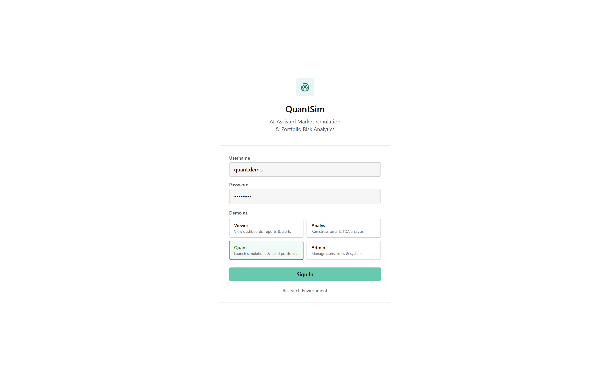
The login screen is not a formality — it is where the permission model is introduced. The four role tiles tell the panel that QuantSim is designed as a multi-persona platform before they have seen a single chart.
"This is the entry point. Standard credentials at the top — and I want to draw your attention to the four tiles underneath, because they are the first design decision worth discussing.
QuantSim is not built for a single user. It is built for four distinct personas with genuinely different needs, and the platform enforces that separation as a capability model rather than as a cosmetic label.
A Viewer consumes: dashboards, reports, alerts. They see risk, they cannot create it. An Analyst is the risk practitioner — they run stress tests, they run topological analysis, they compute metrics, they configure dashboards and set up alert rules, but they do not author strategies or launch simulations. A Quant is the model builder — everything an analyst can do, plus creating trading strategies, calibrating stochastic models, launching simulations, constructing portfolios and managing the model registry. An Admin adds the platform layer on top: user management, role assignment, instrument reference data, system configuration.
The important point is that this is not four hard-coded menus. It is a capability matrix — seventeen named capabilities mapped to roles — and I will show you that matrix explicitly later in the administration section. In production this is exactly where you would bind to your enterprise identity provider.
Select Quant. Click Sign In. There is a deliberate half-second transition — narrate over it."I am signing in as a Quant, because the Quant sees the widest slice of the platform and that gives us the most to talk about."
- Four personas: Viewer consumes → Analyst analyses → Quant builds → Admin governs.
- The role model is a capability matrix of 17 named permissions, not four hard-coded menus.
- Roles are cumulative — each tier is a strict superset of the one below it.
- Say "this is where SSO/your IdP binds in production" — it pre-answers the security question.
- You are demoing as Quant because it has the widest visibility. Mention it, so nobody wonders.
1.2The workspace shell — sidebar and top bar
Route /dashboard · Action Hover the left rail to expand it, then move the mouse away to collapse it again
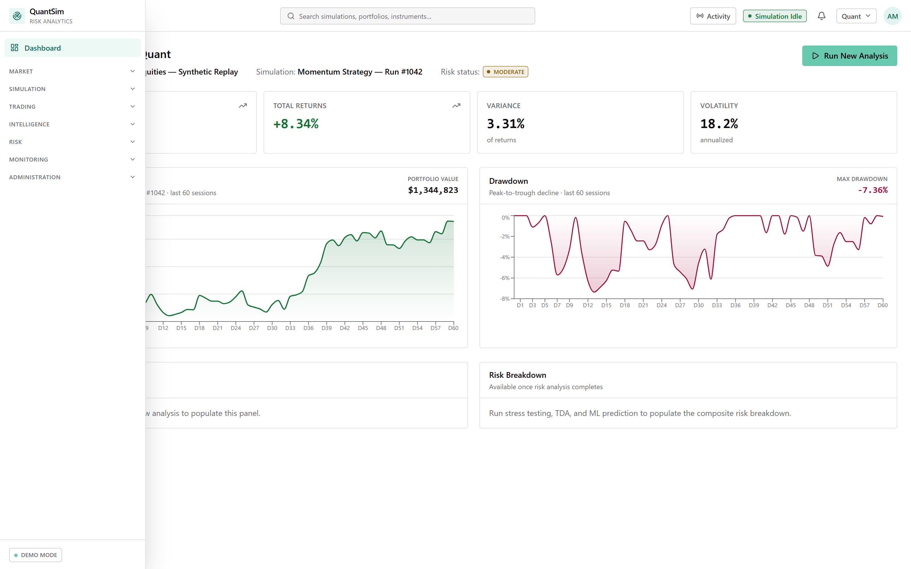
The shell buys back screen real estate for charts. A 64-pixel icon rail that expands to a full labelled menu on hover — you get orientation when you need it and maximum canvas when you do not.
"Two things about the shell before we go anywhere.
First, the navigation. It sits collapsed as an icon rail by default and expands to full labels on hover. That is deliberate: analytics screens are dense — correlation matrices, fan charts, persistence diagrams — and every pixel of horizontal space matters. You get the full labelled menu the instant you reach for it, and you get it out of the way the instant you do not.
Second, look at how it is grouped, because the grouping is the product architecture made visible. Overview. Market. Simulation. Trading. Intelligence. Risk. Monitoring. Administration. That is not an alphabetical list of screens — it is the actual pipeline, in order, top to bottom. A new user can read the sidebar and infer the workflow without being taught it. The section containing your current page stays expanded automatically as you navigate, so you never lose your place.
You will also notice two items carry a dashed 'Extended Scope' badge — News Extraction and Explainability. That badge appears throughout the interface, and it is a deliberate honesty mechanism: it marks capabilities that are part of the product vision and are represented here, but that sit outside the core build this POC focuses on. I will come back to both.
Move the mouse away. Sidebar collapses. Now point at the top bar."Across the top: the active research environment on the left — 'US Technology Basket'. A global search spanning simulations, portfolios and instruments. Then on the right, four controls: an Activity button that opens the system event stream — I will save that for the end, because it is more meaningful once we have generated events. A live simulation status pill, currently reading Idle, which will change as we run. A notification bell. And a role switcher — I can demo as any of the four personas without signing out, which is useful if you want to see a restricted view later."
- Hover-to-expand rail — density is the justification, not decoration. Say "every pixel matters on a correlation matrix".
- Sidebar grouping = the pipeline. Market → Simulation → Trading → Intelligence → Risk → Monitoring → Administration.
- The active section auto-expands; you never lose your place.
- "Extended Scope" dashed badge = in the vision, not in this build. Flag it early, so it reads as honesty, not as a gap.
- Top bar: environment · search · Activity · status pill · bell · role switcher.
- Save the Activity drawer for Act 6 — it is empty of meaning until you have generated events.
1.3The dashboard — cold state
Route /dashboard · Note Point explicitly at the two empty panels at the bottom — you will return to them

Show the dashboard before anything has been run, so that when you return at the end of the walkthrough and it is populated with a HIGH risk badge and a live alert banner, the panel sees the payoff rather than just another screen.
"This is the landing dashboard, and I want you to look at it carefully now because we are going to come back to this exact screen at the end and it will look different.
The header line gives you your working context in one row — which market environment you are in, which simulation is active, and a colour-coded composite risk badge. Right now it reads MODERATE, amber, because no analysis has been run yet.
Underneath, four headline metrics: net profit in dollars, total return, variance of returns, and annualised volatility. Deliberately just four. This is the number a portfolio manager glances at between meetings, not the number they sit down to interrogate.
Then the two charts that matter most for a first read of a portfolio: the equity curve — cumulative portfolio value across the last sixty sessions — and directly beside it the drawdown chart, showing peak-to-trough decline over the same window. Pairing them side by side is intentional. An equity curve alone flatters a strategy; the drawdown underneath tells you what you had to survive to get it. Each panel carries its headline figure in the corner — latest portfolio value, and maximum drawdown.
Point at the two bottom panels. This is the beat that pays off later."And now the part I actually want you to notice. These two bottom panels are empty. 'Latest Analysis' says no active run. 'Risk Breakdown' says available once risk analysis completes.
That is not an unfinished screen — that is the product's core position. QuantSim does not invent a risk number for you. Risk is something you produce, by running an explicit, auditable analysis. Until you do, the platform tells you honestly that it does not know. Hold that thought; we are going to fill both of those panels, and I will bring you back here."
- Show the cold state deliberately. The empty panels are the setup for your closing beat.
- Equity curve + drawdown, side by side — "an equity curve flatters, the drawdown tells you what you survived".
- Four KPIs only: net profit, return, variance, volatility. Restraint is the design argument.
- Empty panels are a stated product position: risk is produced, never assumed.
- Explicitly promise "we will come back to this screen" — then deliver in Act 5.
"Is the dashboard configurable?" — Yes, in the capability model:
configure_dashboards is granted to Analyst and above. The layout you are seeing is
the default; per-user panel configuration is a build item, not an architectural one.
"Why sixty sessions?" — It is the demo window, chosen so the drawdown structure is visible without compressing the chart. Window length is a display parameter.
The data foundation
Before running anything, show the panel that QuantSim has a real reference-data layer underneath it. This is the section that earns you credibility with the quants in the room — it proves the product is not just a chart gallery.
≈ 6 minutes2.1Market Environments
Route /market/environments · Sidebar Market → Market Environments
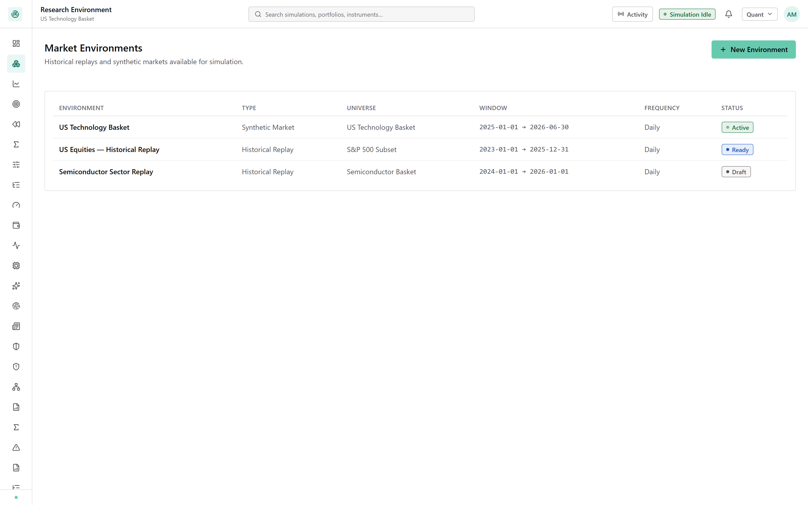
A market environment is the container everything else runs inside. Establish this concept properly now and the rest of the demo has somewhere to stand.
"Everything in QuantSim happens inside a market environment, so let me define that term before we use it forty more times.
A market environment is a bounded, reproducible world: a defined universe of instruments, a fixed date window, and a data frequency. It is the container. Simulations run inside it, strategies trade inside it, and risk is measured inside it. Two analyses run against the same environment are directly comparable; two run against different environments are not, and the platform makes that distinction explicit rather than leaving it to a naming convention in a spreadsheet.
There are two kinds, and the distinction matters analytically. A Historical Replay steps through recorded market data over a fixed window — real observed prices, one single realised path, useful for backtesting against what actually happened. A Synthetic Market generates data from a stochastic process calibrated to historical statistics — which lets you generate thousands of alternative paths and ask what could happen, not just what did. Historical replay tells you about the past. Synthetic markets are how you get a distribution.
Each row carries a lifecycle status — Active, Ready, Draft — so an environment being prepared is visibly distinct from one that is validated and in use.
- Definition: environment = universe + date window + frequency. The reproducible container.
- Historical Replay = one realised path, what did happen. Backtesting.
- Synthetic Market = calibrated stochastic process, thousands of paths, what could happen. Distributions.
- One line that lands: "Historical tells you about the past. Synthetic gets you a distribution."
- Lifecycle status (Active / Ready / Draft) = governance, not decoration.
- Comparability is enforced by the container, not by file naming.
2.2Instruments and market data
Routes /market/instruments, then /market/data · Action On Market Data, click through two or three symbols to show the chart re-render
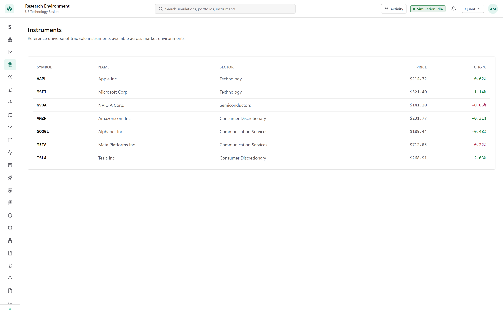
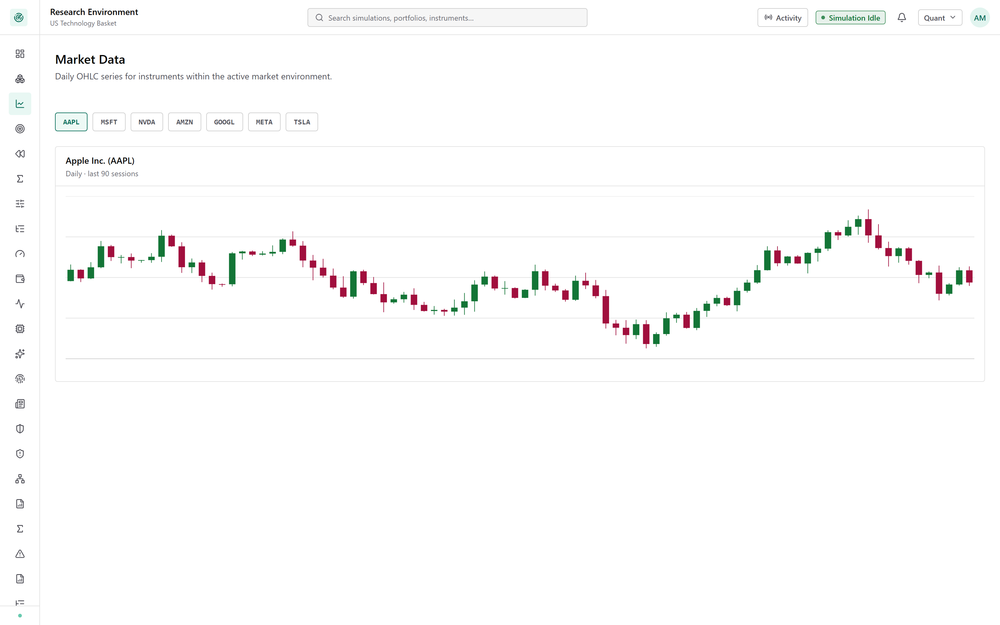
Two screens, one point: QuantSim owns its reference universe and can render true OHLC price series for any instrument in it. This is the raw material the entire pipeline consumes.
"The instruments screen is the reference universe — the master list of tradable securities available across all environments. Symbol, name, sector classification, last price, and daily change with directional colour: green for positive, red for negative, applied consistently everywhere in the platform.
Sector is on this table for a specific reason that becomes important two acts from now. When we reach stress testing, one of the scenarios is a sector collapse, and when we reach topological analysis, the clusters that emerge tend to be sector clusters. Sector is not metadata here — it is a risk dimension.
Navigate to Market Data. Click AAPL, then NVDA, then MSFT. Let them see the chart change."And this is the price data itself. Chips across the top for each instrument, and beneath it a proper daily OHLC candlestick series — ninety sessions. Open, high, low, close, with the body and wick rendered correctly, not a smoothed line pretending to be price data.
Watch it re-render as I switch symbols. Each instrument's series is generated from a deterministic seed, which is why AAPL looks the same every time you open this screen. In production this panel is fed by the market data service — the interface contract is identical."
- Instruments = the master reference universe shared across all environments.
- Sector is a risk dimension, not metadata — it returns in stress testing and in TDA clustering. Plant this seed here.
- Directional colour (green up / red down) is applied consistently platform-wide.
- Real OHLC candlesticks, 90 sessions — say "not a smoothed line pretending to be price data".
- Deterministic per-symbol seed — same chart every time. Pre-empts "did that number just change?"
2.3Replay
Route /market/replay · Action Click Play, let it sit for a beat, then move on. Keep this one short.
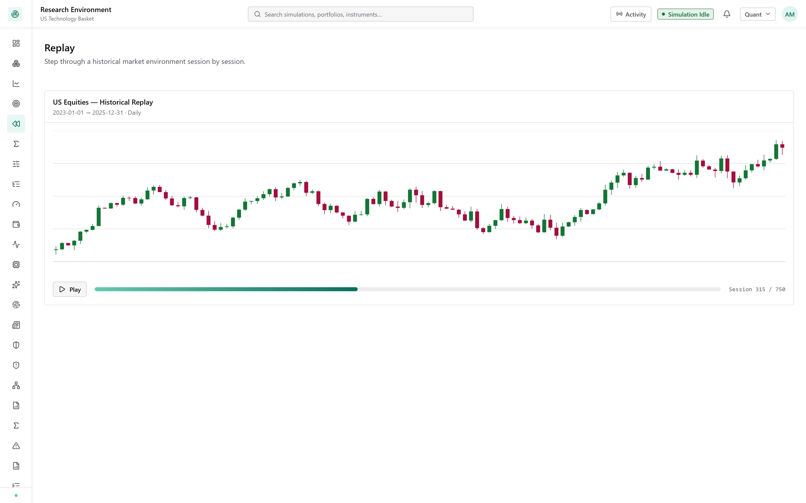
Time is a first-class control. A quant can step through a historical window session by session rather than only seeing the endpoint.
"Replay is a small screen with a specific purpose: it makes time something you can drive rather than something you only see the end of.
Transport control, a progress bar, and a session counter — currently three hundred and fifteen of seven hundred and fifty sessions. You scrub through a historical window and watch structure develop. That matters when you are investigating when a regime changed rather than confirming that it changed — the same transport metaphor reappears in the trade replay later, where you watch execution unfold order by order."
- Purpose: time as a controllable axis, not just an endpoint.
- Answers "when did structure change", not just "did it".
- Same transport pattern recurs in Trade Replay — call the consistency out.
- Keep this screen to 30 seconds. It is a supporting actor.
2.4Calibrations and Models
Routes /simulation/calibrations, then /simulation/models · Warning This is the screen your quants will scrutinise. Slow down here.
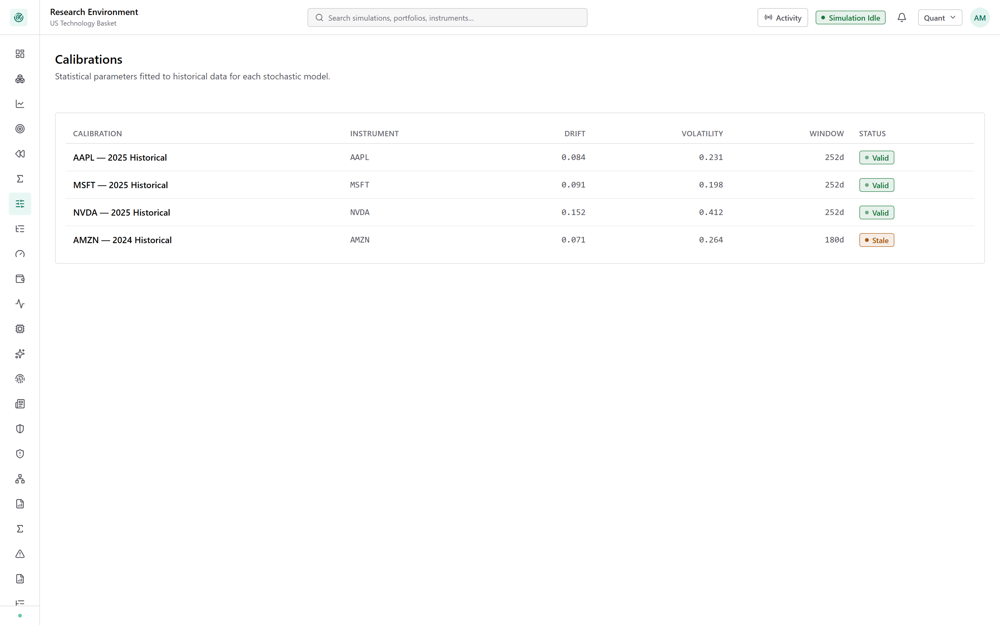
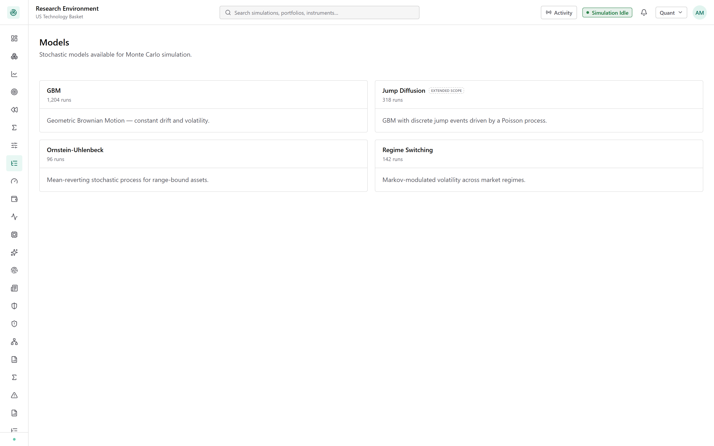
Calibration is treated as a governed, versioned, expiring artefact — not a parameter someone typed into a form. The Stale flag on the AMZN row is the single most credible detail in this entire section. Point at it.
"This screen matters more than its size suggests, so let me spend a moment on it.
A calibration is the set of statistical parameters fitted to historical data that a stochastic model consumes. For a geometric Brownian motion that is a drift term and a volatility term, estimated over a defined lookback window. Those numbers are not typed into a configuration form — they are fitted, and they are the difference between a simulation that reflects the asset and a simulation that is decorative noise.
So QuantSim treats calibration as a first-class, governed object. Every calibration is stored with its instrument, its fitted drift, its fitted volatility, its estimation window in trading days, and — critically — a validity status.
Point directly at the AMZN row."Look at this row. AMZN, fitted over a one-hundred-and-eighty-day window, flagged Stale. Calibrations decay. Volatility regimes shift, and a parameter set fitted to last year's market silently produces a confidently wrong distribution this year. The most dangerous failure mode in this entire class of system is not a model that crashes — it is a model that runs cleanly on expired parameters and hands you a number you believe.
So the platform surfaces staleness at the point of selection, before the run, rather than burying it in a log afterwards. The other three are Valid, with a two-hundred-and-fifty-two-day window — one full trading year.
Navigate to Models."And these are the stochastic processes available. Four of them.
Geometric Brownian Motion — constant drift and volatility, log-normal dynamics. The workhorse, and by usage count the most-run model here by a wide margin. Ornstein-Uhlenbeck — mean-reverting, appropriate for range-bound assets, spreads, anything with a gravitational centre. Regime Switching — Markov-modulated volatility, so the process moves between distinct volatility states rather than assuming one constant regime. And Jump Diffusion — diffusion with discrete Poisson-driven jump events, which is how you model gap risk that a continuous process structurally cannot produce.
Note that Jump Diffusion carries the Extended Scope badge. It is represented in the interface, it is selectable in the configuration screen, but its implementation sits outside this build's core scope. I would rather show you the intended model shelf and mark what is not built than show you three models and imply that is the ceiling."
- Calibration = fitted parameters, not typed parameters. This is the credibility line.
- Point at the Stale AMZN row. Your strongest single detail: the platform warns you before the run.
- The killer line: "the dangerous failure is not a model that crashes — it is one that runs cleanly on expired parameters."
- 252-day window = one trading year. 180-day = stale. Know both numbers.
- Four models, one sentence each: GBM constant drift/vol · OU mean-reverting · Regime Switching Markov vol states · Jump Diffusion Poisson gap risk.
- Jump Diffusion is Extended Scope — say so before anyone clicks it.
"What triggers the Stale flag?" — In this POC it is a data attribute. The intended rule is window age relative to a per-model recalibration policy — a 180-day fit outside its revalidation period. That policy threshold is exactly the kind of thing that belongs in Settings, where there is already a Risk Thresholds tab.
"Can you calibrate from this screen?" — calibrate_models is
a Quant-level capability in the matrix. The trigger action is not wired in this build; the
artefact, its lifecycle and its consumption point are.
The golden path — from market to portfolio
This is the spine of the demo. Eight numbered steps, each screen leading to the next by a single primary button at the bottom right. From here on, always click the flow button — never the sidebar.
≈ 10 minutes3.0Set up the path before you start it
"Everything so far has been reference material — the world the platform knows about. Now I am going to run the actual workflow, end to end, exactly as a quant would on a Monday morning.
It is an eight-step path, and the interface numbers each step for you in the header — you will see 'Step 1 of 8', 'Step 2 of 8' and so on, so you always know where you are in the sequence and how much is left. Each screen has exactly one primary action at the bottom right that carries you forward. Market environment, simulation configuration, simulation run, results, portfolio construction, trade execution, risk analysis, and finally the composite risk decision.
I want you watching for one thing as we go: the interface never asks you for something it already knows. Each step inherits the context of the one before it. Watch the calibration carry from the market environment, the strategy carry into the portfolio, the portfolio carry into every risk screen. Let us start."
- Eight steps, numbered in the UI — the panel can always see where they are.
- One primary action per screen, bottom right. Never navigate by sidebar during this act.
- Give them one thing to watch for: context inheritance, step to step.
- Frame it as "what a quant does on a Monday morning" — a workflow, not a feature tour.
3.1Step 1 of 8 — Create Market Environment
Route /market/environments/new · Action Toggle between the two market types; deselect and reselect a ticker chip; then click Continue to Simulation
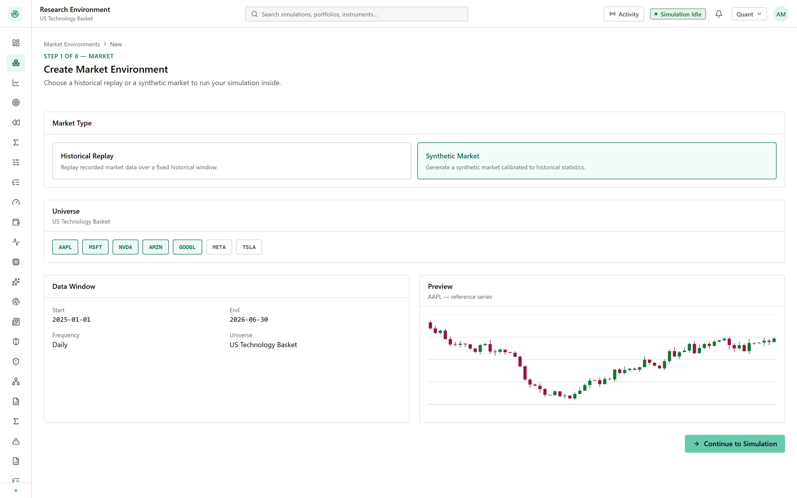
Four decisions on one screen — type, universe, window, frequency — with an immediate visual preview so you are never configuring blind.
"Step one. Define the world.
Two choices at the top, and this is the historical-versus-synthetic decision we discussed earlier, now presented as an actual fork in the workflow. Historical Replay: replay recorded market data over a fixed window. Synthetic Market: generate a market from a process calibrated to historical statistics. I am selecting Synthetic, because the whole point of what follows is generating a distribution of outcomes rather than re-reading one realised path.
Click a ticker chip to deselect it, then click it again to reselect. Small gesture, real point."Below that, the universe. Seven instruments available, five selected — Apple, Microsoft, Nvidia, Amazon, Alphabet. These are toggles, so composing a universe takes seconds. And this matters more than it looks: the universe you pick here is the universe the topological analysis operates on. Five assets gives you ten pairwise correlations, which is the point cloud that persistent homology will consume in Act 4. Universe selection is not cosmetic — it determines the dimensionality of everything downstream.
Then the data window — start, end, frequency, and the resolved universe label — and beside it a live preview of a reference series so you can see the character of the data before you commit to it. You are never configuring blind.
Click "Continue to Simulation". Notice the header on the next screen now says Step 2 of 8.- Four decisions on one screen: type, universe, window, frequency.
- Choose Synthetic and say why: "because I want a distribution, not one path".
- Universe = TDA dimensionality. 5 assets → 10 pairwise correlations. This is the strongest line on the screen — it links Act 3 to Act 4.
- Live preview = "never configuring blind".
- Toggle a chip on and off while talking. Movement holds attention.
3.2Step 2 of 8 — Simulation Configuration
Route /simulation/configure · Action Click through the four model cards, land back on GBM, then click Run Simulation
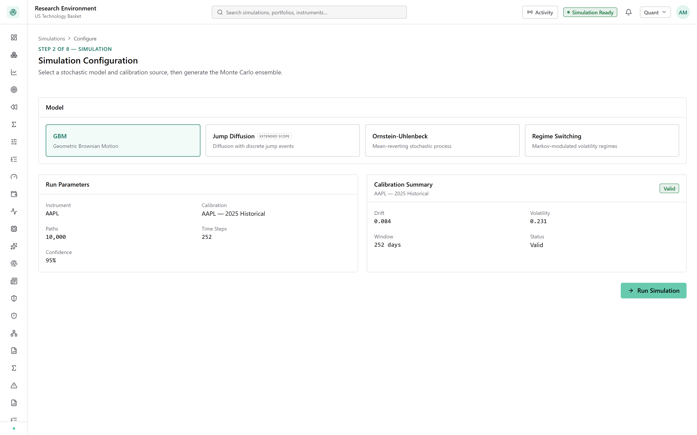
This is where the calibration story you set up in Act 2 pays off: the fitted parameters appear beside the run configuration, validated, before you launch. Model risk is made visible at the moment of the decision.
"Step two. Choose the process.
Here is the model shelf again, now as a live selector — GBM, Jump Diffusion with its Extended Scope badge, Ornstein-Uhlenbeck, Regime Switching. I am staying with geometric Brownian motion for this run because it is the transparent baseline, and because the point of this walkthrough is the workflow rather than the process.
Underneath, the run parameters. Instrument: AAPL. Ten thousand paths. Two hundred and fifty-two time steps — one trading year, daily. Confidence level ninety-five percent. Ten thousand paths is a meaningful ensemble: enough that your fifth and ninety-fifth percentiles are stable rather than noisy, which is exactly what you need if you are going to quote a VaR off the resulting distribution.
Move to the right panel — the calibration summary. This is the callback."And here — this is the panel I set you up for earlier. The calibration summary is carried into this screen automatically. Drift, zero point zero eight four. Volatility, zero point two three one. Window, two hundred and fifty-two days. Status: Valid, with a green pill.
I did not select this calibration on this screen. It was inherited from the environment I built in step one. And I cannot launch a run without seeing, at the moment of launch, exactly which fitted parameters I am about to use and whether they are still trusted. That is model risk governance expressed as interface design — the check is in your path, not in a report you read afterwards."
Click "Run Simulation".- Numbers to have ready: 10,000 paths · 252 steps · 95% confidence.
- Justify 10,000: "enough that the 5th and 95th percentiles are stable, not noisy" — matters if you quote VaR off it.
- 252 steps = one trading year, daily. Say it, do not make them work it out.
- The calibration is inherited, not re-entered. This is your context-inheritance proof point.
- Closing line: "model risk governance expressed as interface design — the check is in your path, not in a report afterwards."
3.3Step 3 of 8 — the simulation runs
Route /simulation/run/1042 · Timing Roughly 8 seconds of live progress. Talk over it — do not stand in silence.
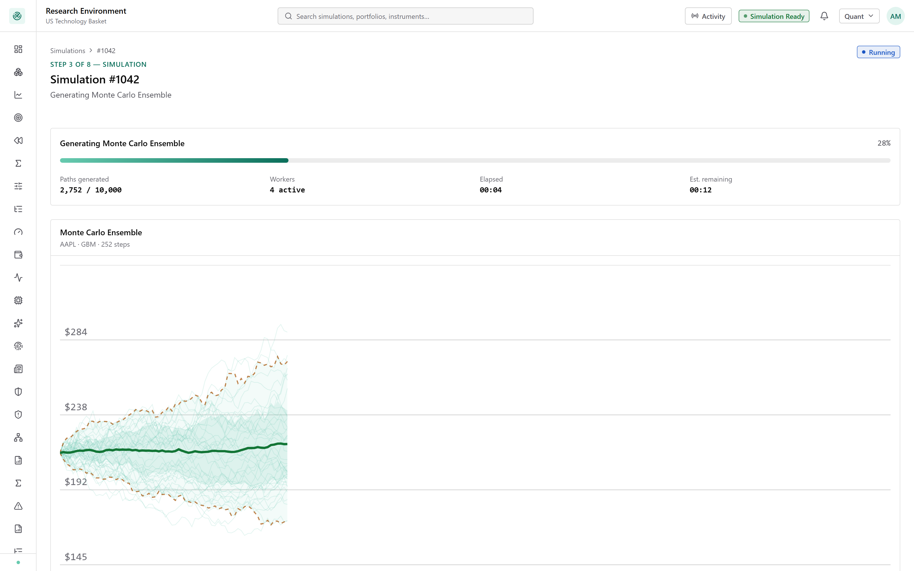
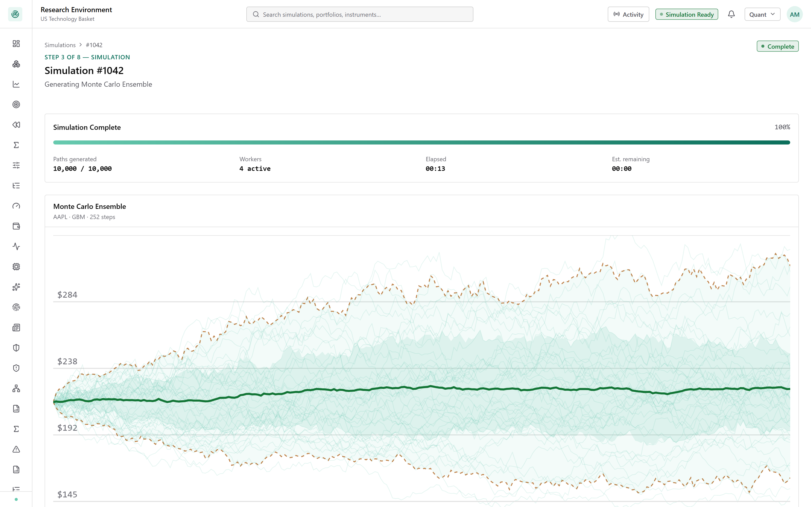
A long-running distributed job is rendered as an observable process — progress, worker count, elapsed and remaining time, a streaming event log, and a chart that fills in as the ensemble builds. This is the screen that makes the system feel real.
"And it is running. Watch four things at once, because this screen is deliberately doing four jobs.
The progress bar and path counter — paths generated against ten thousand, climbing live. The worker count, four active: this is Monte Carlo, it is embarrassingly parallel, and the architecture distributes the ensemble across workers. Elapsed time and estimated remaining time, so a quant running a serious job knows whether to wait or go and do something else.
Then the fan chart in the middle, and this is my favourite detail on the screen: it is not a spinner that gets replaced by a result. The ensemble reveals itself progressively as paths complete. You are watching the distribution take shape. If something pathological were happening in the process, you would see it here rather than in a summary statistic ten minutes later.
And underneath, the event log, streaming with timestamps: calibration validated, job queued, worker one started, worker two, three, four, twenty-five hundred paths, five thousand, seventy-five hundred, ten thousand. Every one of those lines corresponds to an event that would be published on the message bus in the production architecture. This log is the user-facing surface of an event-driven backend, and I will show you the same events again from the system side at the end.
It completes. The status pill flips to green, the "View Results" button appears."Complete. Ten thousand of ten thousand. The status pill has flipped to green, and a new action has appeared — the interface only offers you the next step once the current one has genuinely finished. Note also that the failure path is built: if a worker were unavailable, this screen shows a failure state with a retry action rather than hanging silently."
- Talk continuously through the ~8 seconds. Silence during a progress bar kills momentum.
- Four things happening at once: progress · workers · fan chart revealing · event log streaming.
- "Monte Carlo is embarrassingly parallel" — justifies the 4-worker display to a technical panel.
- Best line: "it is not a spinner replaced by a result — the ensemble reveals itself as paths complete."
- The event log = the user-facing surface of the event-driven backbone. Promise the callback in Act 6.
- Mention the failure + retry state exists — panels always ask what happens when it breaks.
3.4Step 4 of 8 — Simulation Results
Route /simulation/results/1042 · Action Read the four percentiles aloud, then the two risk figures, then click Create Portfolio

Ten thousand paths collapsed into the four numbers a risk practitioner actually uses — and then, critically, into VaR and CVaR side by side.
"Step four. The ensemble, summarised.
The fan chart now at full size. Every path is one simulated trajectory of AAPL over a trading year; the density of the fan is the probability mass. Narrow early, spreading as uncertainty compounds — which is the correct shape and the intuitive one.
On the right, the terminal price distribution reduced to four numbers. Mean, two hundred thirty-eight forty-one. Median, two hundred thirty-four eighty. The mean sitting above the median is the right-skew you expect from a log-normal process — worth saying out loud in this room, because it tells you the summary is behaving consistently with the model that produced it. Then the fifth percentile at one eighty-one twenty-two and the ninety-fifth at three hundred twelve seventeen — the ninety percent confidence interval on where this asset lands in a year.
Move to the Risk Summary panel underneath."And underneath, the two figures a risk function actually reports on. Value at Risk at ninety-five percent: minus eight point seven percent — the loss you do not expect to exceed nineteen days out of twenty. And directly beneath it Conditional VaR, minus twelve point nine — the average loss given that you are in that worst five percent.
The reason those two sit adjacent rather than on separate screens is that VaR alone is a genuinely dangerous number. It tells you the threshold and says nothing about the depth of the tail behind it. CVaR tells you how bad it gets once you are through. Displaying them apart invites exactly the misreading that this discipline has spent fifteen years trying to unlearn."
- Numbers: mean $238.41 · median $234.80 · P5 $181.22 · P95 $312.17.
- Mean > median = right skew = consistent with log-normal. Say this; a quant panel will notice you noticed.
- P5–P95 = the 90% confidence interval on terminal price.
- VaR −8.7% = threshold, 19 days out of 20. CVaR −12.9% = average loss given you breached it.
- The argument for the layout: "VaR alone is a dangerous number — it gives the threshold and says nothing about the depth of the tail."
"Historical, parametric or Monte Carlo VaR?" — Monte Carlo, computed from this ensemble's terminal distribution, which is the internally consistent choice given the simulation you just watched. In this POC the figure is fixed demo data; the placement and the method are the design statement.
3.5Interlude — the strategy library
Routes /trading/strategies and /trading/strategies/strat-momentum-1 · Action Optional detour. Drag the Maximum Position slider — it is the only tactile control in the demo.
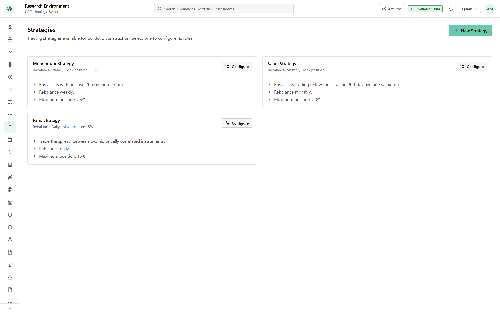
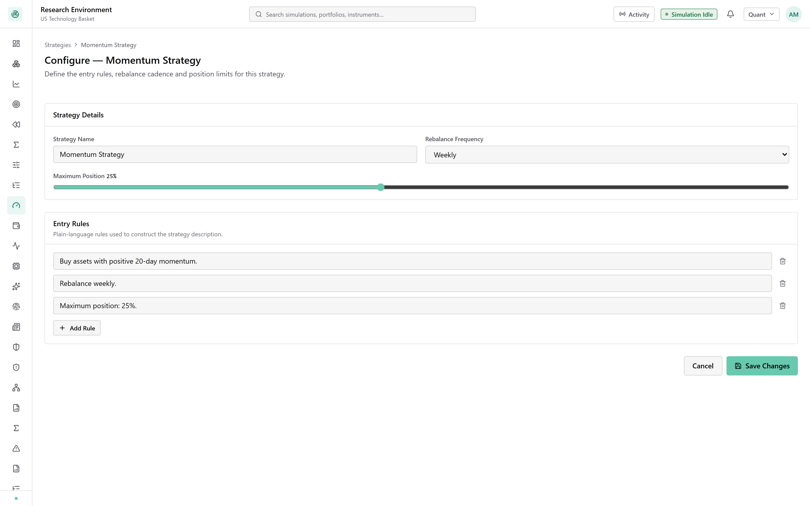
Strategies are declarative and readable. A risk officer who does not code can audit what a strategy does by reading three bullet points — which is the whole argument for stating rules in plain language.
"Quick detour, because the next step asks me to choose a strategy and I should show you where they come from.
Three strategies in the library. Momentum — buy positive twenty-day momentum, rebalance weekly, cap any position at twenty-five percent. Value — buy below the trailing two-hundred-day average valuation, rebalance monthly, cap at twenty percent. Pairs — trade the spread between two historically correlated instruments, rebalance daily, cap at fifteen percent.
Notice that each one is stated in three plain-language lines: an entry rule, a rebalance cadence, a position limit. That is deliberate. A risk officer who does not read Python can audit what this strategy does by reading three bullet points. And note the cadence and the cap move together with the strategy's character — pairs trading rebalances daily and carries the tightest position limit, because it is the highest-turnover, highest-concentration approach of the three.
Open the Momentum strategy in the editor. Drag the Maximum Position slider."And the editor. Name, rebalance frequency, a position limit on a live slider — watch the percentage update as I drag it — and the rules as an editable list you can add to and remove from. The strategy definition and the risk constraint live in the same form, so you cannot author a strategy without confronting its concentration limit."
- Three strategies, each = entry rule + rebalance cadence + position cap.
- The argument: "a risk officer who does not read Python can audit this by reading three bullet points."
- Cadence and cap track the strategy's character: pairs = daily + tightest 15% cap.
- Drag the slider. It is the only genuinely tactile control in the demo — use it.
- Constraint and definition in the same form — you cannot author without confronting concentration.
- Cut this section entirely if you are running long. It is the one dispensable stop.
3.6Step 5 of 8 — Create Portfolio
Route /trading/portfolios/new · Action Point at the weight bars, then at the execution assumptions, then click Run Strategy
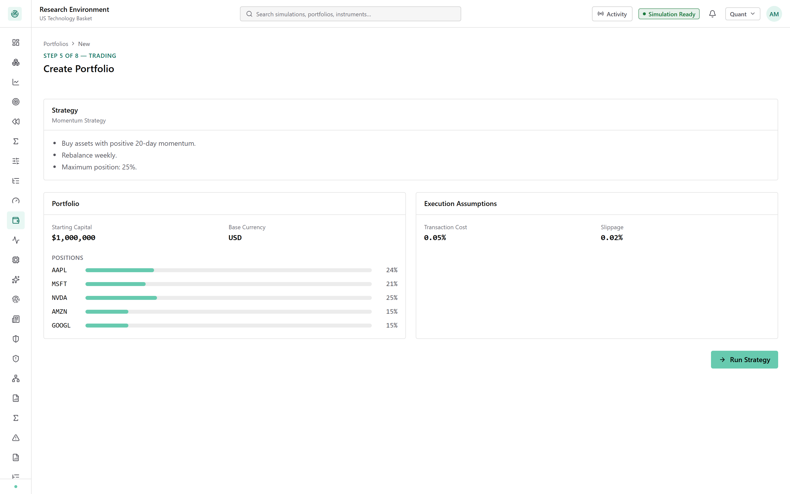
The execution assumptions panel is the most important thing on this screen. Transaction cost and slippage are stated before the run, on the same screen as the weights — which is how you prevent a backtest that quietly assumes frictionless trading.
"Step five. Turn the simulation into a portfolio.
At the top, the strategy — inherited, with its rules restated so you are looking at them at the moment you commit capital rather than remembering them from another screen.
On the left, one million dollars starting capital, base currency USD, and the position weights as horizontal bars: Apple twenty-four, Microsoft twenty-one, Nvidia twenty-five, Amazon fifteen, Alphabet fifteen. Bars rather than a table because concentration is a shape — you can see in a fraction of a second that this is a top-heavy book with three positions in the low-to-mid twenties. And every one of them sits inside the strategy's twenty-five percent cap, so the constraint we just set is visibly binding on Nvidia.
Move to the right panel and slow down. This is the screen's real argument."And on the right — the panel I would like this panel to notice. Execution assumptions. Transaction cost, five basis points. Slippage, two basis points.
These are stated before the run, on the same screen as the weights, as a first-class input rather than a footnote in a methodology document. The reason is that the single most common way a backtest lies to you is by quietly assuming frictionless execution. A strategy that rebalances weekly across five positions incurs real cost, and if that cost is invisible at configuration time it is invisible in the result. Here it is a declared parameter of the run, and it is auditable afterwards."
Click "Run Strategy".- $1,000,000 · USD · weights AAPL 24 / MSFT 21 / NVDA 25 / AMZN 15 / GOOGL 15.
- NVDA at 25% is exactly on the strategy cap — point this out; it proves the constraint binds.
- Bars not tables because "concentration is a shape".
- The headline argument: transaction cost 5bp + slippage 2bp, declared before the run.
- Killer line: "the most common way a backtest lies to you is by quietly assuming frictionless execution."
3.7Step 6 of 8 — Trade Replay
Route /trading/replay/1042 · Action It auto-plays. Click 20× if you are behind schedule. Talk over the fills.
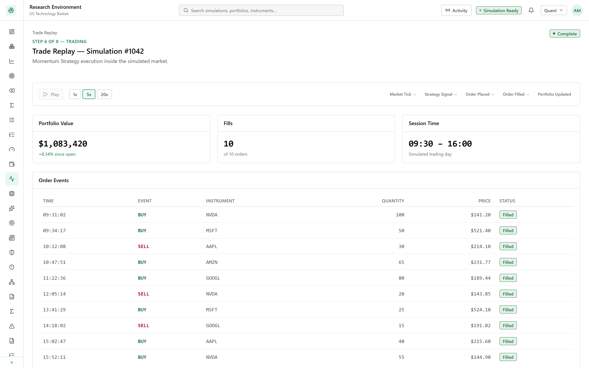

The execution pipeline — tick, signal, order, fill, portfolio update — is animated live above the order blotter. This is the screen where the panel can see the event-driven architecture rather than be told about it.
"Step six, and this is the strategy executing inside the simulated market. It is running now.
Transport controls on the left — play, pause, and speed at one, five or twenty times. The speed control exists because a quant investigating a specific fill needs to slow down and step, while a quant reviewing a whole session needs to skip.
Point at the highlighted pipeline on the right of the control bar."Now look at the right of that control bar, because this is the important part. Five stages, highlighting in sequence as the replay runs: Market Tick → Strategy Signal → Order Placed → Order Filled → Portfolio Updated.
That is the actual event chain of the trading engine, animated live. A market tick arrives. The strategy evaluates it and may emit a signal. A signal becomes an order. An order fills. The fill updates portfolio state. Each of those is a discrete event on the bus, and each is independently observable — which is what makes execution debuggable. When a fill looks wrong you can ask which of those five stages produced the wrong thing, rather than staring at a P&L number.
Below, three live counters — portfolio value ticking up, fill count, session window nine-thirty to sixteen hundred — and the order blotter filling in row by row: timestamp, buy or sell in directional colour, instrument, quantity, execution price, fill status.
It completes at ten fills. The "Analyze Portfolio Risk" button appears."Ten fills, session closed. And now the handoff that the whole first half of this demo has been building toward: Analyze Portfolio Risk. We have a portfolio with a real position set, a real execution history and declared costs. The question stops being 'what did it return' and becomes 'what could go wrong with it'."
- Speeds 1× / 5× / 20× — justify with "slow to investigate a fill, fast to review a session".
- The five-stage pipeline is the centrepiece: Tick → Signal → Order → Fill → Portfolio Update.
- Why it matters: "each stage is independently observable, which is what makes execution debuggable."
- Ten fills, session 09:30–16:00, blotter with timestamp / side / instrument / qty / price / status.
- The pivot line into Act 4: "the question stops being what did it return, and becomes what could go wrong."
Three independent risk lenses
The intellectual core of QuantSim and the longest act. Three methodologically independent views of the same portfolio — scenario stress, topological structure, machine learning — each answering a question the other two cannot.
≈ 12 minutes4.1Step 7 of 8 — Risk Overview, the fork
Route /risk/overview · Action Read the three taglines aloud. Then click Run Full Risk Analysis.
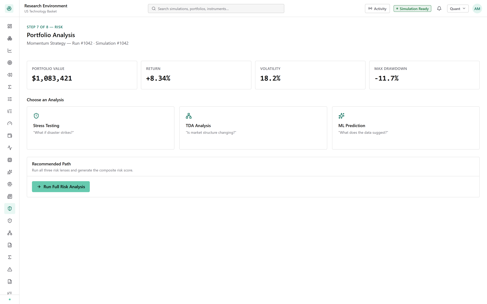
Three cards, three questions. Read the taglines aloud — they are the clearest statement of QuantSim's thesis anywhere in the product.
"Step seven, and this screen is the thesis of the entire platform, so let me be slow and clear.
At the top, the portfolio as it now stands: one million eighty-three thousand four hundred and twenty-one dollars, up eight point three four percent, eighteen point two percent annualised volatility, maximum drawdown minus eleven point seven percent. A perfectly respectable result. A strategy you would be pleased to show someone.
And the position of this product is that those four numbers tell you almost nothing about the risk you are carrying. They are backward-looking. They describe what happened. They are silent on what is about to.
Move to the three cards. Read each tagline out loud, deliberately."So QuantSim offers three analyses, and read what is written under each one, because these taglines are the clearest articulation of the product's argument.
Stress Testing — 'What if disaster strikes?' A hypothetical, scenario-driven view. You impose a shock and measure what breaks.
TDA Analysis — 'Is market structure changing?' A structural, geometric view. Not the level of risk, but whether the shape of the relationships between your assets is deforming.
ML Prediction — 'What does the data suggest?' A statistical, forward-looking view learned from historical patterns.
Three questions. Three methodologies with genuinely different failure modes. And that independence is the design point: a scenario test only finds what you thought to imagine, a topological signal is agnostic about causes and can flag structural change nobody scripted, and a machine learning model finds patterns neither of the first two encode — but only patterns resembling its training data. Each covers a blind spot in the others. Run one and you have an opinion; run all three and where they agree, you have something worth acting on.
Point at the Recommended Path panel and click "Run Full Risk Analysis"."The interface makes that recommendation explicitly rather than leaving it to discipline. You can open any lens individually — and once one has run, its card carries a coloured risk badge so you can see at a glance which analyses are complete. But the recommended path runs all three and then composes them."
- Portfolio: $1,083,421 · +8.34% · 18.2% vol · −11.7% max DD.
- Set-up line: "a perfectly respectable result — and those four numbers tell you almost nothing about the risk you are carrying."
- Read the three taglines verbatim. Stress: what if disaster strikes. TDA: is structure changing. ML: what does the data suggest.
- Each lens's blind spot: stress only finds what you imagined · TDA is agnostic about cause · ML only sees patterns like its training data.
- The thesis in one sentence: "run one and you have an opinion; run all three and where they agree, you have something worth acting on."
- Cards gain a risk badge once run — completeness is visible.
4.2Lens one — Stress Testing
Route /risk/stress-testing · Action Click through the five scenarios to show the descriptions change; land on Correlated Failure; click Run Stress Test
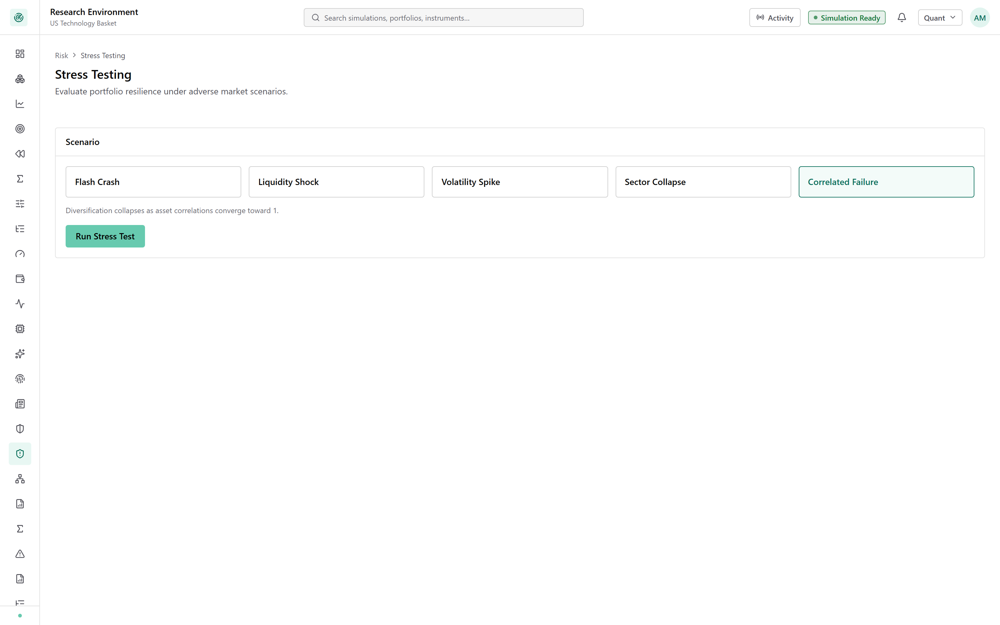
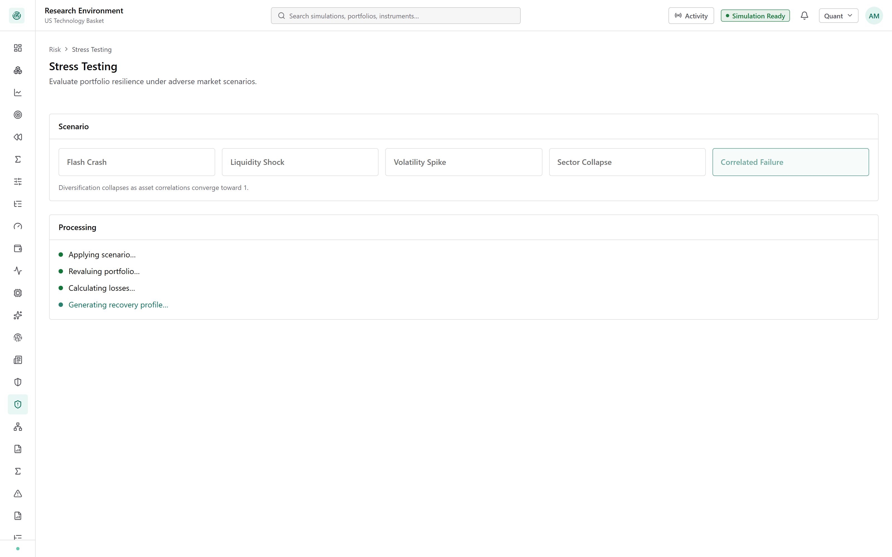

Five named scenarios, then four numbers and an attribution chart. The recovery-time figure and the contribution breakdown are what separate this from a single scary percentage.
"Lens one. Stress testing, and five named scenarios — each with a description that resolves underneath as you select it.
Flash Crash — a sudden sharp decline across the book within minutes, with partial recovery. Liquidity Shock — spreads widen, market depth collapses, execution cost explodes. Volatility Spike — realised and implied volatility surge across the universe, compressing risk-adjusted returns. Sector Collapse — a concentrated drawdown in one sector propagating to portfolio level. And Correlated Failure — diversification collapses as correlations converge toward one.
I am selecting Correlated Failure deliberately, and I want to say why in this room. It is the scenario that breaks portfolios which look well diversified on paper. Our book holds five names across four sectors. Under normal conditions that is genuine diversification. In a correlated failure, every one of those positions moves together, the diversification benefit you were counting on evaporates precisely when you need it, and your effective concentration turns out to be far higher than your position weights suggested. It is the scenario most likely to surprise the person who built the portfolio.
Click Run Stress Test. The four processing steps take about two seconds."And notice the processing is not a spinner — it names the four stages as it works through them: applying the scenario, revaluing the portfolio, calculating losses, generating the recovery profile. That is the actual sequence of a stress computation, and showing it makes the operation legible rather than magical.
The result appears. Take the four numbers one at a time."The result. Maximum loss, minus twenty-one point four percent. VaR minus eighteen point seven. CVaR minus twenty-five point one. And a fourth number I want to dwell on: recovery time, forty-seven days.
Recovery time is the number that turns a stress test into a business decision. Minus twenty-one percent is a shock; minus twenty-one percent that takes forty-seven trading days to recover is a liquidity and mandate problem. It determines whether you can hold through it, whether you breach a drawdown limit, whether a client redeems at the bottom. Loss magnitude tells you what happened to the book. Recovery time tells you what happens to you.
The whole result carries an ELEVATED badge — the platform's five-level scale, from LOW through MODERATE, ELEVATED, HIGH to SEVERE, applied consistently across every risk signal in the product.
Point at the contribution bars at the bottom."And underneath, attribution: which positions produced the loss. Nvidia thirty-four percent of it, Apple twenty-four, Microsoft twenty, Amazon thirteen, Alphabet nine. That converts the analysis from a warning into an instruction. A headline of minus twenty-one percent tells a portfolio manager to worry. 'Nvidia is a third of your downside' tells them what to actually do — and note that Nvidia is also the position sitting exactly on the twenty-five percent concentration cap we saw two screens ago. The two observations reinforce each other."
- Five scenarios: Flash Crash · Liquidity Shock · Volatility Spike · Sector Collapse · Correlated Failure.
- Justify choosing Correlated Failure: "it breaks portfolios that look diversified on paper".
- Results: max loss −21.4% · VaR −18.7% · CVaR −25.1% · recovery 47 days.
- Dwell on recovery time: "loss magnitude tells you what happened to the book; recovery time tells you what happens to you."
- Five-level scale: LOW → MODERATE → ELEVATED → HIGH → SEVERE, used consistently platform-wide.
- Attribution NVDA 34 / AAPL 24 / MSFT 20 / AMZN 13 / GOOGL 9 — and NVDA is the position on the 25% cap. Make that link.
- "A headline tells a PM to worry. Attribution tells them what to do."
4.3Lens two — Topological Data Analysis, in seven stages
Route /risk/tda-analysis · Action Step through all seven stages with the button at the bottom of each panel. Do not skip. This is the centrepiece.
This is the most differentiated and the most technically demanding part of the demo, and it is the part your panel is most likely to interrogate. Two rules. First, do not rush it — budget five of your twelve Act 4 minutes here. Second, do not oversell it: there is an explicit disclaimer on the final stage stating that this is a visual demonstration of the pipeline rather than a live computation. Read that disclaimer aloud yourself. If a topologist in the room finds it before you point at it, you lose the room.
Seven stages, each one screen, each with an on-demand plain-language explainer: returns → correlation → distance → complex → homology → landscape → risk signal. The pipeline is the argument. Walk it in order and the panel arrives at persistent homology without ever feeling lost.
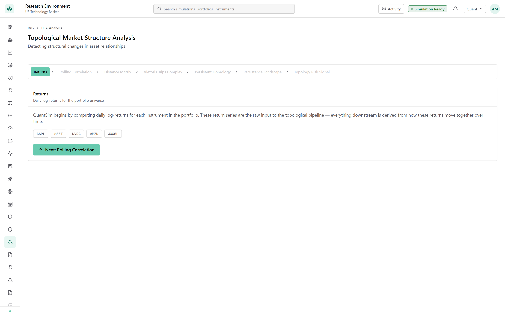
"Lens two, and this is the piece of QuantSim that does not exist in the tools you are currently using, so I am going to walk it slowly.
First, look at the navigator across the top. Seven stages, and the later ones are visibly locked. You cannot jump to persistent homology from a standing start — the interface makes you walk the pipeline, because each stage only makes sense in terms of the one before it. Once you have walked it, every stage stays clickable, so you can go back and re-examine any step. Progressive disclosure the first time, random access afterwards.
Stage one. Returns. We compute daily log-returns for each instrument in the portfolio universe — the five names we selected back in step one. That is the raw input, and everything downstream is derived purely from how these five return series move together over time. No prices, no fundamentals, no news. Just co-movement."
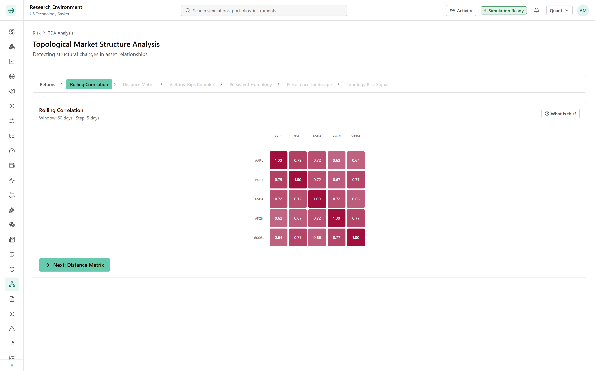
"Stage two. Rolling correlation, sixty-day window stepping forward five days at a time.
Every cell is the correlation between one pair of assets over the trailing sixty sessions. Because the window rolls, this matrix is not a snapshot — it is a film. We are watching the relationship structure evolve.
And note this control in the corner — 'What is this?'. Every non-obvious stage of this pipeline carries an inline plain-language explainer. That is a deliberate accessibility decision: topological data analysis is unfamiliar to most people who need to act on its output. A portfolio manager should be able to understand what they are looking at without a topology course, and without leaving the screen to find documentation."
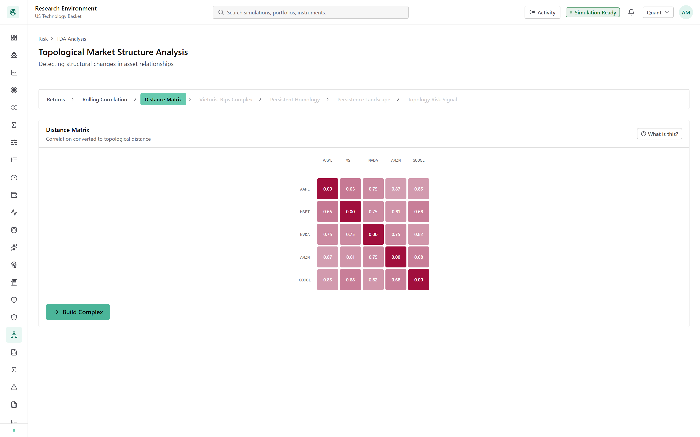
"Stage three, and this is the conceptual pivot of the whole pipeline. We convert correlation into distance.
Two assets that are highly correlated are, in this construction, close together. Two that move independently are far apart. And that single transformation is what lets us stop doing statistics and start doing geometry — because now the five assets in this portfolio are five points in a metric space, and a portfolio has a shape.
The heatmap looks similar to the previous one by design, with the colour ramp inverted so that hot means close. Same data, reframed. Everything from here forward is a statement about that shape."
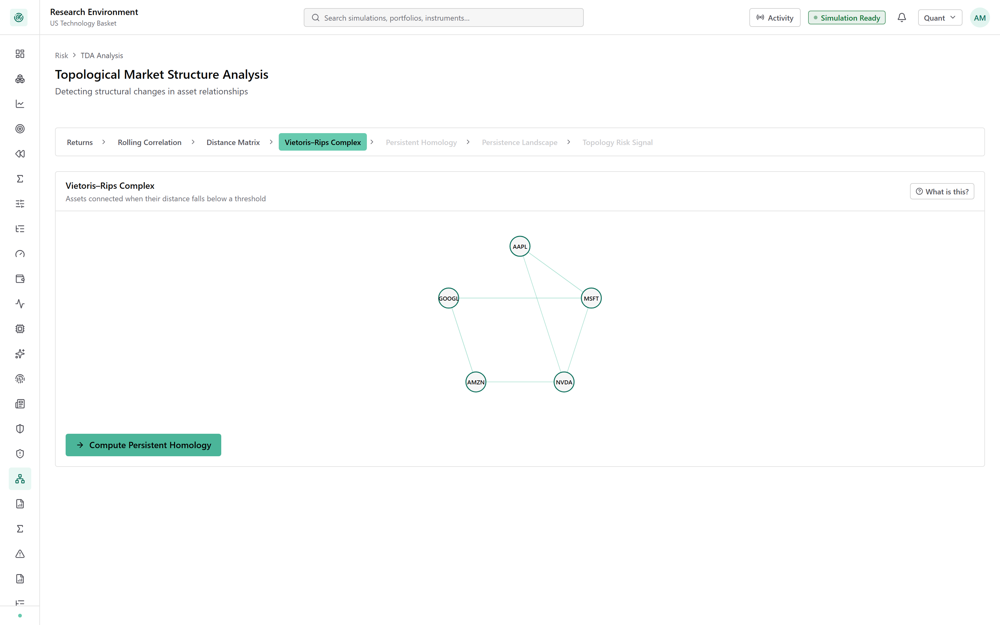
"Stage four. The Vietoris–Rips complex — and despite the name, the idea is simple. Draw an edge between any two assets whose distance falls below a threshold. Then grow the threshold and watch what happens.
At a small threshold you have five isolated points — nothing is close enough to anything else. As the threshold grows, edges appear, clusters form, and eventually everything connects to everything. The structure that emerges along the way is the information.
And the risk reading is immediate and intuitive: a dense, tightly connected graph at a low threshold means the market is moving as one thing. That is diversification failing, rendered as a picture. You do not need to interpret a correlation coefficient — you can see it."
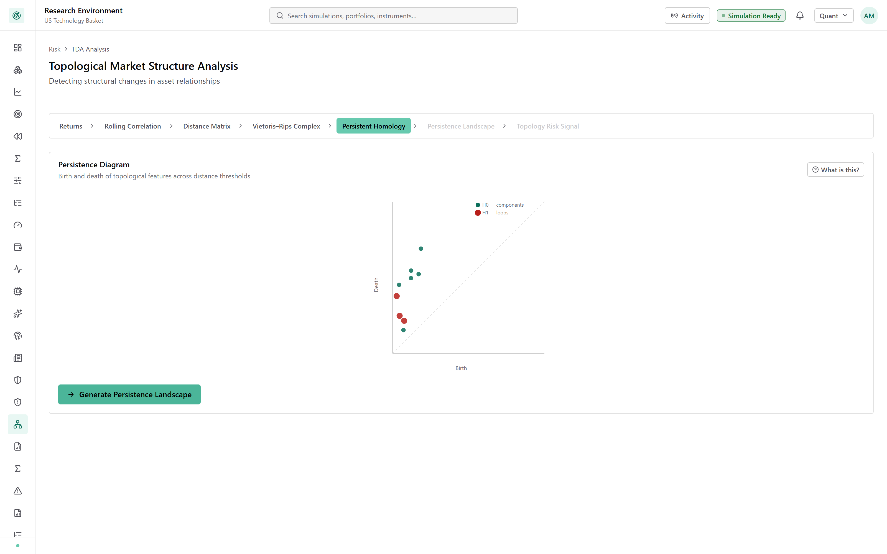
"Stage five. Persistent homology, and this is the mathematical core.
As we grew that threshold, features appeared and disappeared. Two assets that were separate merge into one cluster. A loop forms in the network and later fills in. Every one of those events has a birth — the threshold at which it appeared — and a death — the threshold at which it merged or closed.
This diagram plots every feature as a point: birth on the horizontal axis, death on the vertical. Green points are H0 features, connected components — clusters. Red points are H1 features, loops.
Trace the dashed diagonal with your finger or cursor. This is the key reading."And here is the single thing to understand about this chart. That dashed diagonal is where birth equals death — a feature that appeared and immediately vanished. Points sitting near the diagonal are noise. Points sitting far above it persisted across a wide range of thresholds, and that persistence is what makes them structurally real rather than an artefact of where you happened to set a cutoff.
That is why this method is powerful for market structure: it is scale-free. You are not asking 'are these assets correlated above zero point seven'. You are asking 'what structure exists regardless of the threshold I choose'. It removes the single most arbitrary parameter in conventional correlation analysis."
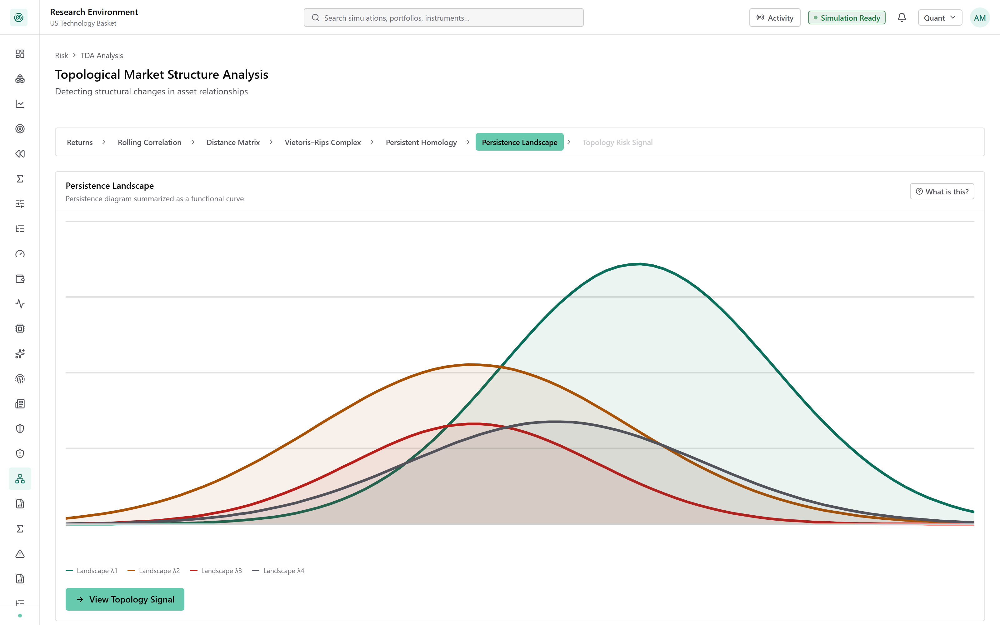
"Stage six. The persistence landscape, which solves a practical problem.
A persistence diagram is a scatter of points, and scatters of points are hard to compare and almost impossible to feed into anything downstream. You cannot easily average them, subtract one from another, or track them over time.
The landscape transforms that scatter into a set of functional curves. Curves live in a vector space. They can be compared, differenced, averaged, and — critically — tracked. Which means you can compute today's landscape, compare it to last week's, and quantify how much the topology of your market has moved.
That is the bridge from an interesting geometric observation to an operational risk signal. Without this step, TDA is a picture. With it, it is a monitorable time series."

"Stage seven. Everything collapses into one number.
Eighty-four out of one hundred. HIGH. 'Structural deformation detected.' And beneath it, a timeline marking when the shift occurred — because knowing that structure changed is only half the finding; knowing the date lets you correlate it with what else happened that week.
This is the highest of the three risk scores we will generate, and that turns out to matter in the composite. Note the direction of the pipeline: we went from five return series, through geometry, to a single monitorable number with a date attached — without ever asking anyone to specify what kind of crisis to look for. That is what distinguishes this from scenario testing. Stress testing finds what you imagined. This finds structural change you did not think to script.
Now read the small print at the bottom of the panel aloud. Do not skip this."And I want to read you the disclaimer the interface puts on this screen itself, because it is important and I would rather say it than have you find it: 'This is a visual demonstration of the QuantSim topology pipeline, not a live mathematical computation. The persistence landscape values above are controlled demo data.'
The pipeline is correct — the stages are the right stages, in the right order, and the interface for each is designed against what the real output would look like. The computation behind it is not live in this build. That distinction is stated in the product, not just in my narration."
- 1 Returns — daily log-returns for the five names. Only co-movement, nothing else.
- 2 Rolling correlation — 60-day window, 5-day step. "Not a snapshot, a film."
- 3 Distance matrix — the pivot. Correlated = close. "We stop doing statistics and start doing geometry."
- 4 Vietoris–Rips complex — connect below a threshold, then grow it. "Dense graph at low threshold = the market moving as one thing."
- 5 Persistence diagram — birth vs death. H0 = clusters (green), H1 = loops (red). Near the diagonal = noise; far from it = real. Scale-free — removes the arbitrary correlation cutoff.
- 6 Persistence landscape — scatter → functional curves → comparable and trackable. "From a picture to a monitorable time series."
- 7 Topology signal — 84 / 100, HIGH, with the shift date on a timeline.
- Stages are locked until reached, then all clickable. Progressive disclosure, then random access.
- Click "What is this?" at least once — it is the accessibility argument, live.
- Trace the diagonal physically. It is the one visual gesture that makes stage 5 land.
- Read the disclaimer aloud yourself. Non-negotiable. Owning it protects everything else you said.
- The differentiator, one sentence: "stress testing finds what you imagined; this finds structural change nobody scripted."
"Which homology dimensions do you compute?" — H0 and H1 are shown explicitly in the diagram legend: connected components and loops. For a five-asset point cloud, those are the dimensions carrying interpretable signal.
"How is the 84 derived from the landscape?" — In this build the score is fixed demo data; the intended derivation is a norm on the landscape difference between the current and reference windows. The honest answer is that the scoring function is a specification item, and the interface is built to receive it.
"Why TDA over a rolling eigenvalue or PCA approach?" — They are complementary. The distinguishing property here is threshold-independence: PCA on a correlation matrix still requires you to pick a window and read components at a chosen level. Persistence asks what survives across all thresholds.
"Does it work with five assets?" — Fair challenge. Five points is a small cloud; the method is designed for larger universes where cluster structure is richer. The universe selector on step one is where you would scale that up.
4.4Lens three — Machine Learning Intelligence
Route /ml/predictions · Optional detour /ml/models and /ml/features if the panel presses on model governance

Every model output is shown with its confidence and its feature attribution attached. There is no unexplained number on this screen — that is the entire design position on machine learning in a risk context.
"Lens three. The statistical, forward-looking view — Portfolio Risk Model, version one point four.
Four outputs across the top. Volatility forecast, twenty-seven point four percent — and hold that against the eighteen point two percent realised volatility we saw on the portfolio. The model is forecasting a material expansion in volatility. Drawdown probability, sixty-three percent. Market regime: Stress. And a composite portfolio health score of sixty-one out of a hundred.
Point at the regime timeline."Below that, the regime timeline, and this is the most useful single element on the screen. Calm, Calm, Transition, Stress. That is a trajectory, not a label. A model that tells you 'the regime is Stress' is much less actionable than one that shows you the market was calm, then transitioned, and is now in stress — because the second version tells you the direction of travel and roughly when it turned. And note it agrees with the topological finding: TDA detected structural deformation, and an independently trained regime classifier independently says the market moved from calm through transition into stress. Two different methods, same conclusion.
Move to the two panels at the bottom."And the two panels underneath are, for me, the reason to trust anything on this screen.
On the left, prediction confidence: eighty-seven percent, on a bar. Every model output in QuantSim is displayed with its own uncertainty attached. A drawdown probability of sixty-three percent at eighty-seven percent confidence is a different object from the same number at forty percent confidence, and the interface refuses to let you forget that.
On the right, feature importance: rolling volatility highest, then correlation change, drawdown, momentum, volume. This is the model showing its work. It is not asserting sixty-three percent — it is saying sixty-three percent, driven primarily by rolling volatility and correlation change.
And look at what the second-strongest feature is: correlation change. That is the same underlying phenomenon the topological analysis flagged, arrived at completely independently, by a different method, and surfaced here as a driver. When three methodologies converge on the same cause, that is the strongest signal this platform can produce."
- Outputs: vol forecast 27.4% · drawdown probability 63% · regime Stress · health 61/100.
- 27.4% forecast vs 18.2% realised — say the comparison explicitly; it is the whole point of the number.
- Regime timeline Calm → Calm → Transition → Stress = "a trajectory, not a label".
- Confidence 87% shown beside every output. "The same number at 40% confidence is a different object."
- Feature importance ranks rolling volatility, then correlation change.
- The convergence beat: TDA found structural change; ML independently ranks correlation change second. Different methods, same cause. Land this hard — it sets up the composite.
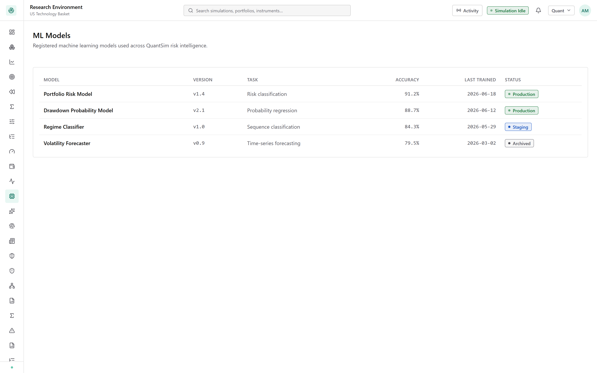
"If model governance is a concern for this panel, there is a registry behind that prediction. Four models, each with a version, a task type, a measured accuracy, a last-trained date, and a lifecycle status — Production, Staging, Archived. So a reviewer can ask 'which model version produced this number, how accurate is it, and when was it last trained' and get an answer from the interface. Same governance instinct as the calibration staleness flag we saw earlier: the metadata that determines whether you should trust the output is surfaced, not buried."
Synthesis — explain, score, alert
Three lenses become one decision. This act is short, and it is where the demo pays off everything you have set up. Do not rush it and do not pad it.
≈ 5 minutes5.1Explainability
Route /risk/explanations · Note This page carries an Extended Scope banner. Acknowledge it as you arrive.
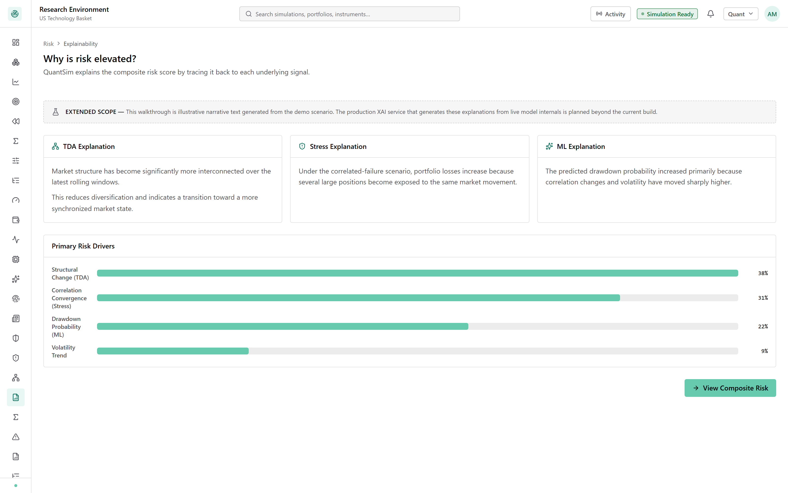
The page is titled with the question a human actually asks — "Why is risk elevated?" — and answers it in prose, per lens, before showing a ranked driver chart.
"Before the platform gives me a single composite number, it explains itself. And look at the page title, because it is not 'Explainability Report' — it is 'Why is risk elevated?'. That is the question an actual human asks, so that is the question the page is named after.
Acknowledge the Extended Scope banner immediately, before anyone reads it themselves."You will see the Extended Scope banner at the top, and I will be direct about it: the narrative you are about to read is generated from the demo scenario. The production explainability service that would generate this from live model internals is planned beyond this build. What is real here is the structure — what an explanation must contain and where it sits in the workflow.
Three panels, one per lens, and each answers in plain English. TDA: market structure has become significantly more interconnected across recent rolling windows, which reduces diversification and indicates a transition toward a synchronised market state. Stress: under correlated failure, losses increase because several large positions become exposed to the same market movement. ML: predicted drawdown probability increased primarily because correlation change and volatility moved sharply higher.
Read those three together. They are three independent methods, and they are describing the same underlying phenomenon in three vocabularies. Correlation structure is collapsing. Topology calls it interconnection. Stress testing calls it common exposure. The model calls it correlation change. That agreement is the finding.
And underneath, the primary risk drivers, ranked and quantified: structural change from TDA at thirty-eight percent, correlation convergence from stress at thirty-one, drawdown probability from ML at twenty-two, volatility trend at nine. So the explanation is not only qualitative — you can see exactly how much of the composite score each contributor is responsible for, which means you can argue with it."
- The page is named after the question, not the feature: "Why is risk elevated?"
- Own the Extended Scope banner before they read it. Structure is real; narrative generation is planned.
- The synthesis line: "three independent methods describing the same phenomenon in three vocabularies."
- Drivers: TDA structural change 38% · stress correlation convergence 31% · ML drawdown probability 22% · volatility trend 9%.
- Why quantified drivers matter: "you can argue with it." Unfalsifiable explanations are worthless in risk.
5.2Step 8 of 8 — Composite Risk
Route /risk/composite · Action Let the 76 sit on screen for a beat before you speak. This is the destination.

One number, with the three components that produced it always shown beside it. The composite is never presented alone — that is the design commitment.
"Step eight. The destination.
Seventy-six out of one hundred. HIGH.
And directly underneath it, always, the components that produced it: stress testing seventy-two, TDA eighty-four, ML sixty-eight, composite seventy-six. The composite is never displayed without its decomposition. You are never handed a number you cannot take apart — and you can see immediately that TDA at eighty-four is pulling the composite upward while ML at sixty-eight is pulling it down.
Move to the radar chart."The radar makes the balance visible as a shape. A roughly equilateral triangle would mean three methods in agreement. A distorted one — which is what we have — means one lens is seeing something the others are not, and the distortion points at the topological axis. That is a prompt to investigate rather than a conclusion, and the interface positions it that way.
Move to the interpretation panel."And then the written interpretation. Four sentences: the portfolio is exposed to elevated systemic risk; the strongest contributor is the structural change detected by topology; stress testing confirms diversification benefits deteriorate under correlation convergence; and ML independently identifies elevated drawdown probability.
Note the word 'independently' in that last line. The platform is explicitly telling you these are corroborating rather than circular findings. When three methods with different failure modes agree, the confidence you should place in the conclusion is higher than any one of them alone would justify.
Point at the italic line at the very bottom."And finally, the small print, which I will read: 'This interpretation describes model output only and does not constitute investment advice.' In any regulated environment that line is not optional, and it is placed where the recommendation is, not buried in a footer three clicks away."
- 76 / 100, HIGH. Components: stress 72 · TDA 84 · ML 68.
- Pause before speaking. Let the number land. This is the emotional peak of the demo.
- The commitment: "the composite is never displayed without its decomposition."
- Radar: equilateral = agreement; distorted = one lens sees something the others do not. It is a prompt, not a conclusion.
- Stress the word "independently" — corroborating, not circular.
- Read the disclaimer aloud. "Placed where the recommendation is, not three clicks away."
"How is 76 weighted from 72, 84 and 68?" — Be straight: in this build the composite is fixed demo data, not a live formula, and 76 is deliberately not the simple mean of 74.7. The weighting function is a specification decision — and I would argue it should be configurable, which is why Settings already carries a Risk Thresholds tab. What the interface commits to is that whatever the weighting is, the components are always displayed alongside it.
5.3The alert
Route /alerts · Do not click Dismiss — you want the alert live when you return to the dashboard

The alert is not a notification — it is a workstation. Every alert carries provenance and the two actions that move an analyst forward.
"And the analysis terminates in an alert. Because a risk score sitting on a dashboard nobody happens to open is not a risk control.
Read what it contains. Title: RISK ALERT, HIGH severity. Message: structural market change detected. Detail: topology risk crossed threshold, seventy-five to eighty-two — so it tells you not just that a threshold was breached, but the value before and after and which threshold. Portfolio: Momentum Strategy. Source: TDA Analysis. Timestamp.
That source attribution is the part I would emphasise. An analyst receiving this at eight in the morning knows immediately which of the three lenses fired and can go straight there. Alerts without provenance generate investigation work; alerts with provenance eliminate it.
Point at the three buttons but do not click Dismiss."Three actions. Investigate — jumps directly into the TDA analysis that produced it. View Analysis — opens the composite risk view for context. Dismiss — which acknowledges and clears it, and I am deliberately not clicking that, because I want this alert live for the next screen.
The alert is not a passive notification. It is an entry point into the exact analysis that generated it. And underneath, a history — this alert plus prior ones, each with severity, time and current status, including a stale-calibration alert, which closes the loop with the AMZN row we looked at in Act 2."
- Alert content: severity · message · before-and-after values (75 → 82) · portfolio · source lens · timestamp.
- The line: "alerts without provenance generate investigation work; alerts with provenance eliminate it."
- Three actions: Investigate (into TDA) · View Analysis (composite) · Dismiss.
- Do not click Dismiss. You need the alert live for the dashboard callback.
- The history includes a stale-calibration alert — closes the loop with Act 2. Point at it.
5.4Back to the dashboard — the payoff
Route /dashboard · Action This is the callback you promised in Act 1. Deliver it deliberately.

Same screen as Act 1, transformed. This is the single most effective moment in the entire presentation. Say "same screen" explicitly and let them compare.
"This is the same screen I showed you at the start of the demo. Same dashboard, same route, nothing reconfigured. Look at what has changed.
The risk status in the header was amber MODERATE. It is now red HIGH. There is an alert banner across the top that was not there before — one active high-risk alert, structural market change detected, and it is clickable straight through to the alert.
The 'Latest Analysis' panel that said no active run now reads Completed, sixteen twenty-one, Momentum Strategy, US Technology Basket. And 'Risk Breakdown', which said available once risk analysis completes, now shows all three lenses with their scores and their individual risk badges — stress seventy-two, TDA eighty-four, ML sixty-eight.
That is the loop closing. We started at a dashboard that honestly told us it did not know. We defined a market, ran a simulation, built a portfolio, executed a strategy, analysed it through three independent lenses, explained the result, composed it into one score and raised an alert. And the dashboard now reflects every one of those steps.
The portfolio's return did not change. It is still up eight point three four percent. What changed is that we now know what it costs us — and the platform got there through a process you could hand to a regulator."
- Say "this is the same screen" explicitly. The comparison does not land unless you name it.
- Three visible changes: MODERATE → HIGH · alert banner appears · both empty panels populate.
- Pause and let them look before narrating. Silence is doing work here.
- The closing line of the act: "the return did not change — what changed is that we now know what it costs us."
- Optional add: "through a process you could hand to a regulator." Use it if the panel skews compliance.
5.5Attribution — the standalone view
Route /risk/attribution · Action Thirty seconds. Skip entirely if you are behind.
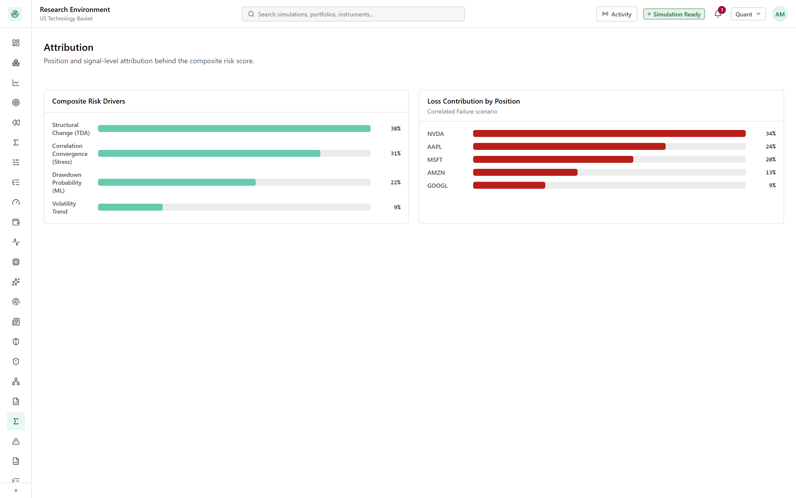
"One short screen worth showing. Attribution puts both decompositions side by side: on the left, which signals drive the composite score; on the right, which positions drive the loss. Those are two different questions — 'what is telling me I am at risk' versus 'what is actually going to lose me money' — and an analyst needs both in the same field of view. It is the screen you would live on during a risk review meeting."
- Two questions, one screen: which signals drive the score vs which positions drive the loss.
- Frame it as "the screen you live on during a risk review meeting".
- First thing to cut if you are over time.
Governance, audit & operations
The analysis is done. This act answers the question every institutional panel asks next: can we actually run this thing, and can we prove what it did? Move briskly — these are short screens with high credibility value.
≈ 4 minutes6.1System Activity — the event backbone
Action Click Activity in the top bar. This is the payoff for the promise you made in Act 3.3.
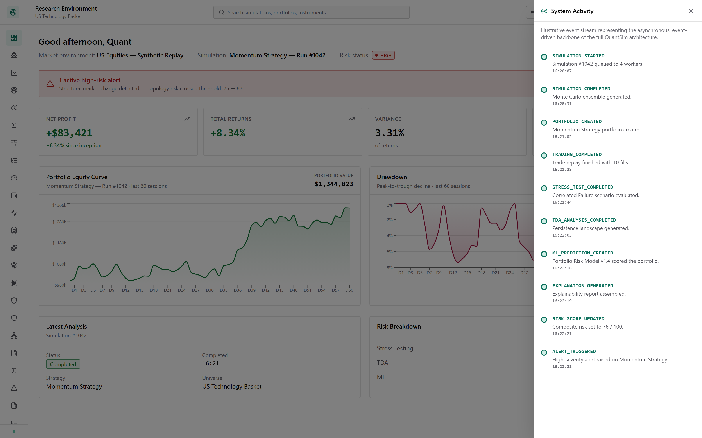
Everything the panel just watched, re-presented as the event stream a distributed backend would emit. This is where a technical audience sees the architecture rather than being told about it.
"I promised you this earlier. This is the system activity drawer, and it is the same story we just walked through, told from the platform's side.
Ten events, in order, with timestamps. SIMULATION_STARTED — queued to four workers. SIMULATION_COMPLETED. PORTFOLIO_CREATED. TRADING_COMPLETED — ten fills. STRESS_TEST_COMPLETED. TDA_ANALYSIS_COMPLETED. ML_PREDICTION_CREATED. EXPLANATION_GENERATED. RISK_SCORE_UPDATED — composite set to seventy-six. ALERT_TRIGGERED.
Every one of those is lit, because we generated all of them in the last half hour. When we started, none of them were.
This matters architecturally. QuantSim is designed as an asynchronous, event-driven system — services publish events, other services subscribe. Simulation completing is what causes risk analysis to become available. The risk score updating is what causes the alert. Nothing polls; nothing is orchestrated by the front end.
That design gives you three things an institutional buyer cares about. It scales — you add simulation workers without touching the risk service. It is resilient — a service can be down and events queue rather than being lost. And it is auditable — this stream is a complete, ordered, timestamped record of everything the platform did, which is exactly what a model risk function will ask you for."
- Ten events, all now lit — none were lit when you started. Say that.
- Causal chain: simulation completes → risk becomes available → score updates → alert fires. Nothing polls.
- Three institutional benefits: scales (add workers independently) · resilient (events queue) · auditable (ordered record).
- This is the architecture made visible — the strongest 90 seconds for a technical panel.
6.2Audit Log
Route /audit-log · Action Click the Critical filter, then back to All
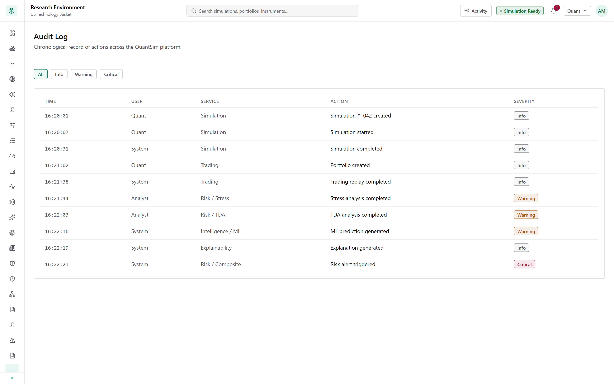
The audit log answers who. The activity stream answered what. A compliance function needs both, and they are deliberately separate objects.
"The activity stream told you what the system did. The audit log tells you what people did, and it is deliberately a different object.
Every row: timestamp, the user or system actor, the originating service, the action, and a severity. Simulation created by Quant. Stress analysis completed by Analyst, marked Warning. Risk alert triggered by System, marked Critical. And every row carries the detail underneath — GBM, AAPL, ten thousand paths; correlated failure, maximum loss minus twenty-one point four percent.
Click the Critical filter, let them see it narrow, then click All."Filterable by severity, so a reviewer opening this after an incident can jump straight to critical events rather than reading a chronology.
For a regulated institution, the two together are the point. If someone asks in six months why this portfolio was flagged HIGH on this date, the answer is fully reconstructible: which user, which service, which parameters, which model version, which calibration, in what order."
- Activity stream = what the system did. Audit log = what people did. Two objects, on purpose.
- Columns: time · user · service · action · severity, with parameter detail per row.
- Demonstrate the severity filter. "Jump to critical rather than read a chronology."
- The compliance line: "fully reconstructible — which user, which service, which parameters, which model version, in what order."
6.3Reports
Route /reports · Action Open the Composite Risk Report, show the modal, then close it
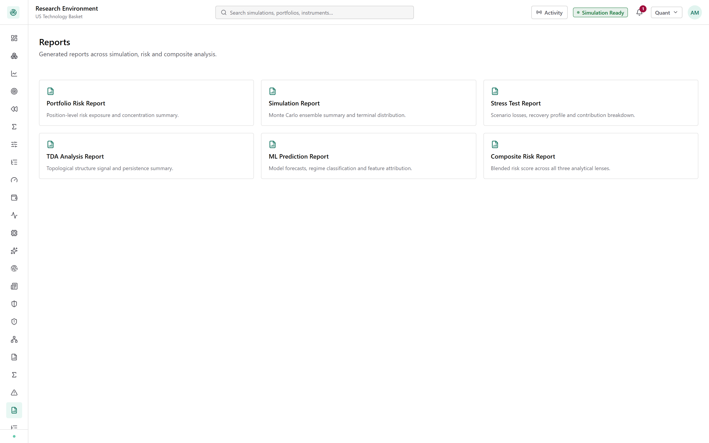
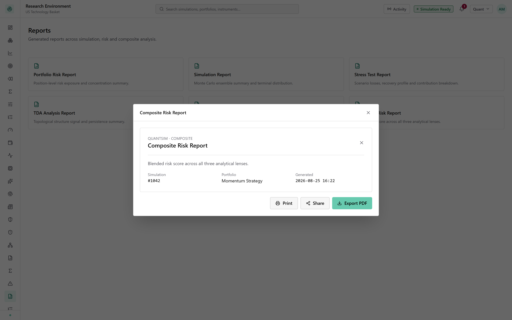
"Reports — six of them, one per analytical stage: portfolio risk, simulation, stress test, TDA, ML prediction, composite risk. Every stage of the pipeline you just watched produces a document.
Open the Composite Risk Report."And when you open one, look at the header of the preview: which simulation, which portfolio, and when it was generated. That is provenance. A risk report that circulates without stating which run produced it is a liability, because six weeks later nobody can tell you whether it is current.
Print, Share, and Export PDF are the actions — these are POC interactions that confirm rather than generate a file, but the placement and the provenance model are the design statement."
- Six reports — one per pipeline stage. Nothing analytical is un-reportable.
- The argument is provenance: simulation ID + portfolio + generation timestamp on every report.
- "A report that circulates without stating which run produced it is a liability."
- Be upfront that export is a POC interaction, not a real file. Say it before they click it.
6.4System Architecture
Route /architecture — not in the sidebar, navigate by URL. Click Risk / TDA to open the inspector.
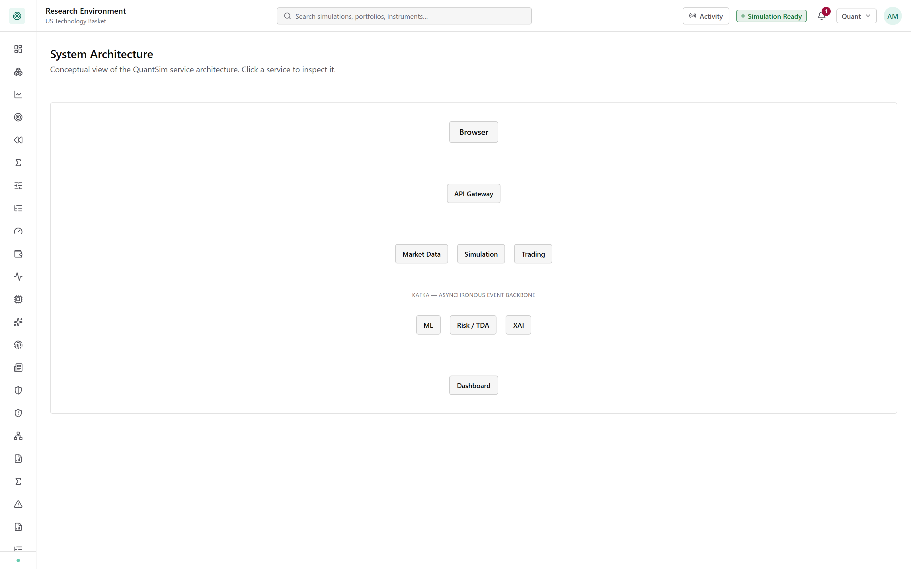
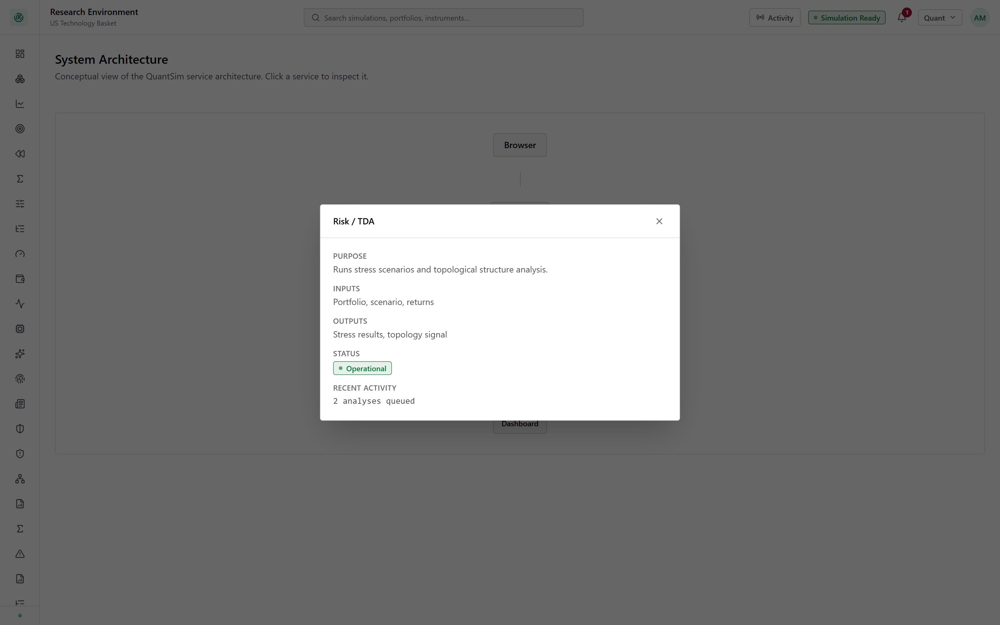
An interactive architecture diagram inside the product. Excellent for a technical panel, and it is not in the sidebar — you must type the URL, so have it ready.
"For the technical members of the panel — there is an architecture view inside the product itself.
Browser at the top, into an API Gateway. Below it the three domain services that own data and execution: Market Data, Simulation, Trading. Then the horizontal band in the middle — Kafka, the asynchronous event backbone — and below it the three analytical services that consume those events: ML, Risk and TDA, and XAI. And finally the Dashboard service, which aggregates composite risk and surfaces alerts.
The shape is the important part. Producers above the bus, consumers below it, nothing calling across. Simulation does not know that the risk service exists — it publishes a completion event. That is what lets you scale, replace or take down any single service without a cascade.
Click the Risk / TDA node."And every node is inspectable. Purpose, inputs, outputs, operational status, recent activity. So this is not a slide pasted into the app — it is a live view of the service topology with each service's contract stated explicitly."
- Not in the sidebar — navigate to
/architecturedirectly. Have it typed or bookmarked. - Topology: browser → gateway → Market/Simulation/Trading → Kafka → ML/Risk-TDA/XAI → Dashboard.
- Producers above the bus, consumers below, nothing calling across. That is the whole architectural argument.
- "Simulation does not know the risk service exists — it publishes a completion event."
- Click a node to show purpose / inputs / outputs / status — it is a contract, not a picture.
6.5Administration — Users, Roles, System
Routes /admin/users → /admin/roles → /admin/system · Action Spend your time on Roles; the other two are 20 seconds each
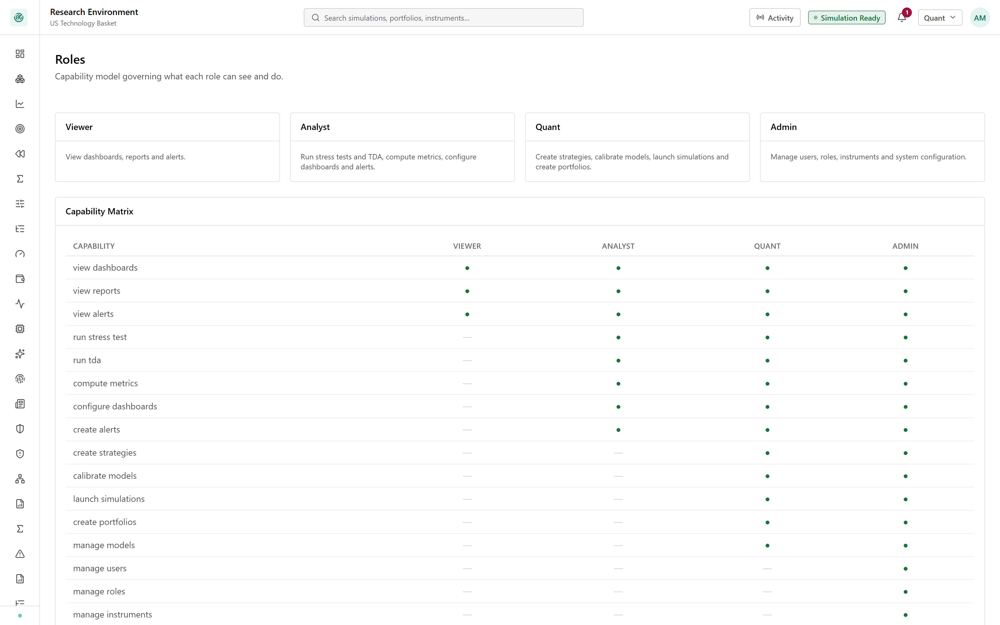
This is where you deliver the promise you made on the login screen. The capability matrix is the single most convincing governance artefact in the product.
"Administration. Users — accounts provisioned for this environment, with role, status and last-active time. Note one account sits in Invited rather than Active, so the provisioning lifecycle is modelled rather than assumed.
Go to Roles. Slow down here."And this is the screen I promised you at the login page. Four role summaries at the top, and beneath them the capability matrix — seventeen named capabilities down the side, four roles across the top, and a dot for every grant.
Read the shape of it. It is strictly cumulative: everything a Viewer can do, an Analyst can do. Everything an Analyst can do, a Quant can do. Everything a Quant can do, an Admin can do. No diagonal exceptions, no special cases.
Look at where the boundaries actually fall, because they encode a real institutional
separation. run_stress_test and run_tda start at Analyst — risk analysis
is an analyst function. create_strategies, calibrate_models and
launch_simulations start at Quant — model authorship is a quant function.
manage_users, manage_roles and configure_system are
Admin-only — platform governance is separated from analysis entirely.
That last separation is the one an auditor cares about: the person who runs the analysis is structurally not the person who controls who may run it.
Go to System. 20 seconds."And System — service health across all eight components including the event backbone, plus environment, version, region and mode. Note it reads Mode: Demo, and version poc-one-point-zero. The platform is telling you what it is, in the product."
- 17 capabilities × 4 roles, strictly cumulative, no diagonal exceptions.
- Boundary 1: run_stress_test / run_tda start at Analyst.
- Boundary 2: create_strategies / calibrate_models / launch_simulations start at Quant.
- Boundary 3: manage_users / manage_roles / configure_system are Admin-only.
- The auditor's line: "the person who runs the analysis is structurally not the person who controls who may run it."
- Users: note the Invited status — provisioning lifecycle is modelled.
- System: Mode reads Demo. Point at it — more honesty currency.
6.6Settings
Route /settings · Action Click straight to the Risk Thresholds tab. Ignore the others.
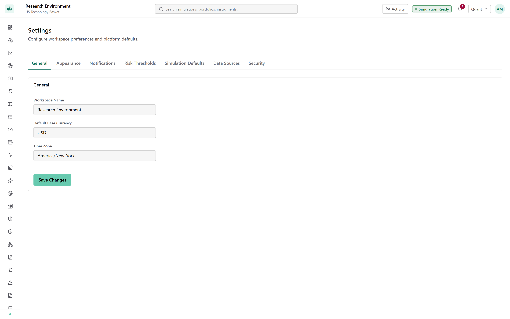
"Settings, briefly — seven tabs: General, Appearance, Notifications, Risk Thresholds, Simulation Defaults, Data Sources, Security.
Open the Risk Thresholds tab."But this is the one worth opening. Risk Thresholds. Composite risk HIGH at seventy. Composite risk SEVERE at eighty-five. TDA structural shift alert at seventy-five.
Those are the numbers that decided our portfolio was HIGH, and the number that fired the alert we saw — the TDA signal crossed from seventy-five to eighty-two, and that threshold is right here, configurable.
The risk appetite of the institution is a parameter of this platform, not a constant baked into it. A hedge fund and a pension fund do not share a definition of HIGH, and they should not have to share a codebase to disagree about it."
- Go straight to Risk Thresholds. The other six tabs are filler for this audience.
- Thresholds: HIGH at 70 · SEVERE at 85 · TDA shift alert at 75.
- Tie it to the alert: the TDA signal crossed 75 → 82, and 75 is configurable right here.
- The line: "a hedge fund and a pension fund do not share a definition of HIGH, and should not have to share a codebase to disagree about it."
Extended scope & honest boundaries
Take ninety seconds to be explicit about what is marked as future scope. Doing this proactively is worth more than any feature you could show instead.
≈ 2 minutes7.1The Extended Scope convention
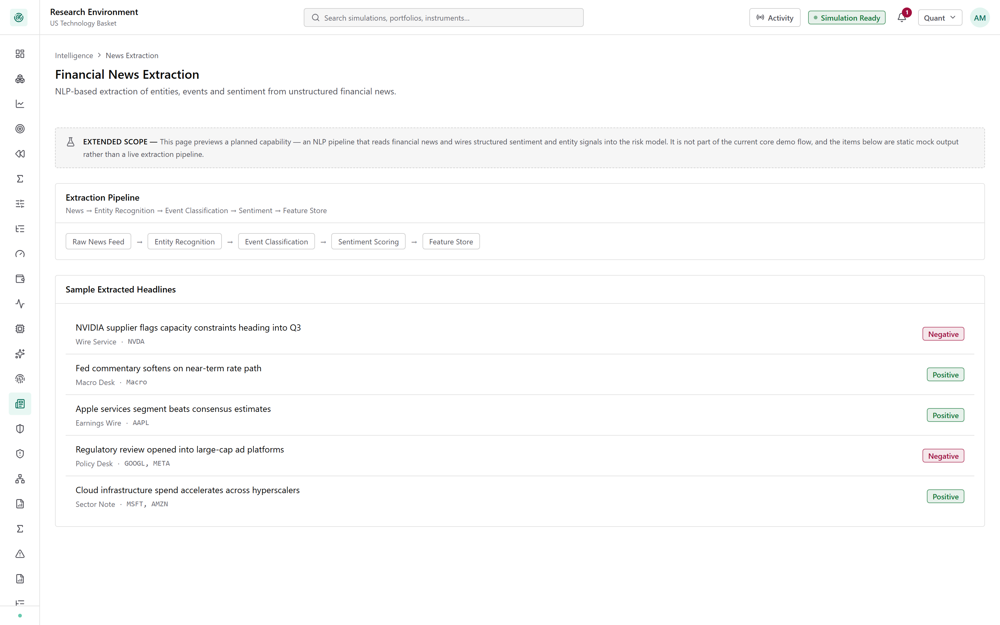
Three things in the product carry the Extended Scope badge, and there is a reason they are shown at all rather than hidden: they define the roadmap in the same language as the build.
"I want to close the walkthrough by being explicit about the boundary, rather than leaving it for you to find.
Three things in this product carry the dashed Extended Scope badge. Jump Diffusion, in the model shelf — selectable in the interface, implementation outside this build. Explainability, which you saw — the structure is real, the narrative generation from live model internals is planned. And this screen, Financial News Extraction.
What it shows is the intended pipeline — raw news feed, entity recognition, event classification, sentiment scoring, and out into the feature store — and sample structured output: a headline, its source, the entities it resolves to, and a sentiment classification. The architectural point is where it terminates: the feature store. This is not a news reader bolted on the side. It is designed to feed the same ML model whose feature importance chart we looked at, so that unstructured text becomes another input alongside rolling volatility and correlation change.
Now — why show any of this at all, rather than hide what is not built?
Because a proof of concept has two jobs. It has to demonstrate what exists, and it has to communicate where the product is going, so that this panel can evaluate the direction and not only the current state. Hiding the roadmap would give you a cleaner demo and a worse decision. The badge is how the interface distinguishes the two without me having to caveat every screen verbally."
- Three Extended Scope items: Jump Diffusion · Explainability narrative · News Extraction. Know all three.
- News pipeline: feed → entity recognition → event classification → sentiment → feature store.
- The architectural point: it terminates in the feature store — it feeds the same ML model, not a separate news widget.
- Why show it: "a POC must demonstrate what exists and communicate where the product is going."
- "Hiding the roadmap gives you a cleaner demo and a worse decision." Strong closing sentiment for this act.
Closing
Two minutes. Recap the spine, restate the boundary once, and hand the floor over with a specific question rather than "any questions?".
≈ 2 minutes8.1The close
"Let me pull it together.
You have seen one continuous workflow. We defined a market environment. We configured a stochastic model against a validated calibration and generated a ten-thousand-path Monte Carlo ensemble. We built a portfolio with declared execution costs and executed a strategy inside that simulated market. We then analysed the result through three methodologically independent lenses — scenario stress testing, topological structure analysis, and a machine learning forecast. We had the platform explain its conclusion in plain language, compose the three into a single governed score, and raise an alert with full provenance. And every step of that produced an audit record and a report.
The one idea I would like to leave with you is the one on the risk overview screen: three lenses that fail differently. Stress testing only finds what you imagined. Topology finds structural change nobody scripted, but cannot tell you why. Machine learning finds patterns neither of them encode, but only patterns resembling what it was trained on. Any one of them alone is an opinion. Where all three agree — as they did today, on correlation structure collapsing — you have something worth acting on.
And to close the way I opened: this is an interface proof of concept. The workflow, the state model, the role model and the information architecture are real. The computation behind the numbers is not, and everything outside the core build is marked in the product itself.
So the question I would like to put back to this panel is not whether you believe the numbers. It is this: walk through your own Monday morning in your head, and tell me where this interface would get in your way. That is the feedback that changes what we build next."
- Recap as one sentence per stage, in order. Do not re-explain — you are reminding, not teaching.
- Leave them with one idea: three lenses that fail differently, and agreement is the signal.
- Restate the boundary once at the close. It bookends the honesty you opened with.
- Never end on "any questions?" Ask a specific one: "where would this get in your way on a Monday morning?"
- Leave the dashboard on screen behind you — the populated one.
Question bank
The questions a domain-expert panel is most likely to ask, and an honest answer for each. Read this the night before. The single rule: never invent a capability that does not exist — every strong answer below concedes something.
9.1On the mock data and the numbers
| They ask | You answer |
|---|---|
| "Are any of these numbers computed?" | The chart geometries are — equity curves, drawdowns, candlesticks, correlation matrices, persistence points and landscape curves are all produced by deterministic seeded generators, which is why they have realistic structure rather than being drawn by hand. The financial results — VaR, the risk scores, the composite — are fixed demo values. The distinction is real and I would rather draw it precisely. |
| "Why is the composite 76 when the three components average 74.7?" | Because the composite is fixed demo data in this build, not a live weighting. The weighting function is an open specification decision, and I would argue it should be configurable per institution. What the interface commits to is that the components are always shown beside the composite. |
| "The dashboard equity panel says $1.34m but the KPI says $1.083m." | Correct, and well spotted. The chart series and the portfolio record are generated from two different sources in this build and are not yet reconciled. It is a data-layer wiring issue in the POC, not a modelling disagreement — and it is exactly the class of thing this review is meant to catch. |
| "Will the numbers change if I refresh?" | No. Everything is deterministic by design, so the demo is identical for every viewer. Refreshing does reset the workflow state to the beginning, though, since state is held in memory. |
9.2On the methodology
| They ask | You answer |
|---|---|
| "Why TDA at all? What does it give me over correlation monitoring?" | Threshold-independence. Conventional correlation monitoring makes you pick a cutoff and a window, and your conclusion moves with those choices. Persistent homology asks what structure survives across all thresholds, so the features it reports are not artefacts of a parameter you chose. It also detects structural change without you specifying what kind of change to look for. |
| "Five assets is a very small point cloud for TDA." | Agreed, and that is a fair limitation of the demo universe rather than of the method. The universe selector on step one is where you scale it; the pipeline is universe-agnostic. With five assets you get ten pairwise distances, which is enough to demonstrate the stages but thin for genuine cluster structure. |
| "Which VaR methodology?" | Monte Carlo, off the terminal distribution of the ensemble you watched generate — the internally consistent choice given the simulation. Historical and parametric VaR would be reasonable additions and the interface has room for a methodology selector. |
| "Is the ML model doing inference, or is it a lookup?" | In this build, a lookup. What is real is the governance surface around it: version, task, measured accuracy, last-trained date, lifecycle status, per-prediction confidence, and feature attribution. The interface is specified to receive real inference; it is not performing it. |
| "Stress scenarios look qualitative. Are they parameterised?" | Not in this build — they are five named scenarios with descriptions. A production version needs shock magnitudes, correlation targets and horizons as editable parameters, and probably user-defined scenarios. That is a genuine gap and I would welcome your view on which parameters matter most. |
9.3On architecture and delivery
| They ask | You answer |
|---|---|
| "What is actually built here?" | A React and TypeScript single-page application. Client-side routing across 35 routes, a state machine driving the flow, a role and capability model, and a centralised mock data layer with deterministic generators. No backend, no database, no message bus. |
| "How far is this from something we could pilot?" | The interface layer is substantially complete for the core flow. What is missing is everything behind it: the services in that architecture diagram, the event bus, real compute for the simulation and topology pipelines, model serving, persistence and authentication. The honest framing is that this de-risks the product and UX decisions, not the engineering. |
| "Why Kafka specifically?" | Ordered, durable, replayable event streams — which matters when your audit position is that any past analysis can be reconstructed. Replayability is the property doing the work; the specific broker is a substitutable decision. |
| "Is it multi-tenant? Where does auth bind?" | Not modelled in this build beyond the role layer. The capability matrix is the natural binding surface for an enterprise IdP, and the login screen is where SSO would land. Tenancy is an architectural decision that has not been made yet. |
| "Accessibility, dark mode, mobile?" | The theme is token-based — semantic colour variables rather than hard-coded values — so an alternate theme is a token swap, not a rewrite. The layout is responsive with breakpoints, though it is designed desktop-first because this is a workstation product. Formal accessibility audit has not been done. |
9.4The three answers to keep in your pocket
- When you do not know: "I do not know, and I would rather find out than guess. Can I come back to you on that?" A panel with domain expertise respects this and punishes the alternative.
- When they find a genuine bug or inconsistency: "That is a real defect, thank you — that is exactly what this review is for." Never explain it away. Conceding a small thing protects your credibility on the large ones.
- When they push on whether the maths is real: "It is not, and the product says so on the screen where it matters. What I am asking you to evaluate is whether this is the right workflow — because if the workflow is wrong, correct mathematics behind it will not save the product."
Appendix — things to know before they ask
10.1Known inconsistencies in this build
- Dashboard equity value vs KPI cards. The equity curve panel reports roughly $1,344,823 with a max drawdown of −7.36%, generated from a seeded series. The KPI cards and every other screen report $1,083,421, +8.34% and −11.7% from the portfolio record. These two sources are not reconciled. A quant will notice. Concede it immediately — see 9.1.
- Composite arithmetic. 76 is not the mean of 72, 84 and 68. Have the answer in 9.1 ready.
- Settings → Appearance reads "Dark (Institutional)" while the application renders a light theme. Cosmetic mock-data leftover; do not open that tab.
- The Architecture page is not in the sidebar. Navigate to
/architectureby URL. - The persistence diagram renders small and off-centre relative to its panel. Do not draw attention to the layout; talk about the diagonal instead.
- A hard refresh signs you out and resets the entire flow, because state is in memory. This is your emergency reset and your biggest live hazard.
10.2Numbers to have memorised
| Where | Figures |
|---|---|
| Simulation | GBM · AAPL · 10,000 paths · 252 steps · 95% confidence · calibration drift 0.084, vol 0.231, 252-day window, Valid |
| Terminal price | Mean $238.41 · Median $234.80 · P5 $181.22 · P95 $312.17 · VaR −8.7% · CVaR −12.9% |
| Portfolio | $1,000,000 start → $1,083,421 · +8.34% · vol 18.2% · variance 3.31% · max DD −11.7% · costs 5bp + 2bp slippage |
| Weights | NVDA 25 · AAPL 24 · MSFT 21 · AMZN 15 · GOOGL 15 (NVDA exactly on the 25% cap) |
| Stress | Correlated Failure · max loss −21.4% · VaR −18.7% · CVaR −25.1% · recovery 47 days · score 72 ELEVATED |
| Loss contribution | NVDA 34% · AAPL 24% · MSFT 20% · AMZN 13% · GOOGL 9% |
| TDA | 60-day window, 5-day step · score 84 HIGH · shift detected 2026-06-24 · threshold crossed 75 → 82 |
| ML | Portfolio Risk Model v1.4 · vol forecast 27.4% · drawdown probability 63% · regime Stress · health 61 · confidence 87% · score 68 ELEVATED |
| Composite | 76 / 100 HIGH · drivers: TDA 38% · stress 31% · ML 22% · vol trend 9% |
| Thresholds | Composite HIGH at 70 · SEVERE at 85 · TDA shift alert at 75 |
10.3Timing plan and what to cut
| Act | Budget | If you are running long |
|---|---|---|
| 0–1 | 5 min | Protected. The framing and the cold dashboard are load-bearing. |
| 2 | 6 min | Cut Replay and Market Data. Never cut Calibrations — the Stale flag is your credibility. |
| 3 | 10 min | Cut the strategy library interlude (3.5). Run Trade Replay at 20×. |
| 4 | 12 min | Protected. This is the product. If forced, compress stress testing, never TDA. |
| 5 | 5 min | Cut Attribution (5.5). Never cut the dashboard callback (5.4) — it is your best moment. |
| 6 | 4 min | Cut Reports and Settings. Keep Activity, Audit Log and Roles. |
| 7–8 | 4 min | Protected. Never skip the honest-boundary section or the close. |
10.4Screenshot index
All captures at 1600×1000 logical / 3200×2000 physical, in presentation/screenshots/, numbered in the order they appear in this script's flow.
| Files | Coverage |
|---|---|
| 01–03 | Login, cold dashboard, expanded sidebar |
| 04–15 | Reference layer: environments, market data, instruments, replay, calibrations, models, simulation list, strategies, strategy editor, portfolios, ML registry, features |
| 16–23 | Golden path steps 1–6: environment → configuration → run → results → portfolio → trade replay |
| 24–27 | Risk overview and the stress testing lens, all three states |
| 28–34 | The seven TDA pipeline stages |
| 35–38 | ML prediction, explainability, composite risk, alert |
| 39–41 | Populated dashboard, attribution, news extraction |
| 42–51 | Reports and modal, audit log, architecture and modal, admin screens, settings, activity drawer |
Generated from the develop-poc branch · 51 captures · 35 routes
Open this file in a browser; print to PDF for a paper copy.